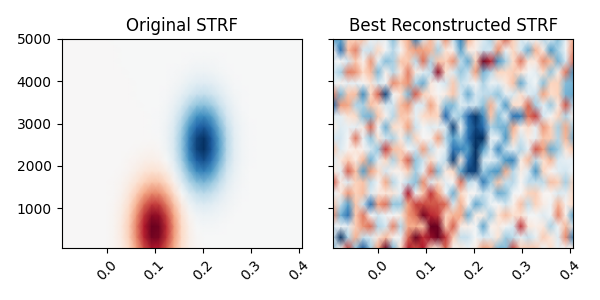
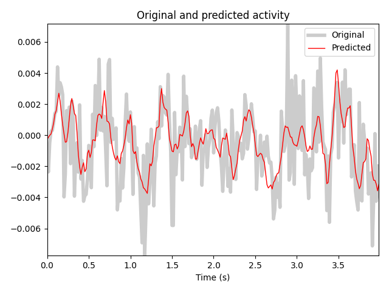

Note
Click here to download the full example code
Spectro-temporal receptive field (STRF) estimation on continuous data¶
This demonstrates how an encoding model can be fit with multiple continuous inputs. In this case, we simulate the model behind a spectro-temporal receptive field (or STRF). First, we create a linear filter that maps patterns in spectro-temporal space onto an output, representing neural activity. We fit a receptive field model that attempts to recover the original linear filter that was used to create this data.
References¶
Estimation of spectro-temporal and spatio-temporal receptive fields using modeling with continuous inputs is described in:
- 1
Theunissen, F. E. et al. Estimating spatio-temporal receptive fields of auditory and visual neurons from their responses to natural stimuli. Network 12, 289-316 (2001).
- 2
Willmore, B. & Smyth, D. Methods for first-order kernel estimation: simple-cell receptive fields from responses to natural scenes. Network 14, 553-77 (2003).
- 3(1,2)
Crosse, M. J., Di Liberto, G. M., Bednar, A. & Lalor, E. C. (2016). The Multivariate Temporal Response Function (mTRF) Toolbox: A MATLAB Toolbox for Relating Neural Signals to Continuous Stimuli. Frontiers in Human Neuroscience 10, 604. doi:10.3389/fnhum.2016.00604
- 4
Holdgraf, C. R. et al. Rapid tuning shifts in human auditory cortex enhance speech intelligibility. Nature Communications, 7, 13654 (2016). doi:10.1038/ncomms13654
# Authors: Chris Holdgraf <choldgraf@gmail.com>
# Eric Larson <larson.eric.d@gmail.com>
#
# License: BSD (3-clause)
import numpy as np
import matplotlib.pyplot as plt
import mne
from mne.decoding import ReceptiveField, TimeDelayingRidge
from scipy.stats import multivariate_normal
from scipy.io import loadmat
from sklearn.preprocessing import scale
rng = np.random.RandomState(1337) # To make this example reproducible
Load audio data¶
We’ll read in the audio data from 3 in order to simulate a response.
In addition, we’ll downsample the data along the time dimension in order to speed up computation. Note that depending on the input values, this may not be desired. For example if your input stimulus varies more quickly than 1/2 the sampling rate to which we are downsampling.
# Read in audio that's been recorded in epochs.
path_audio = mne.datasets.mtrf.data_path()
data = loadmat(path_audio + '/speech_data.mat')
audio = data['spectrogram'].T
sfreq = float(data['Fs'][0, 0])
n_decim = 2
audio = mne.filter.resample(audio, down=n_decim, npad='auto')
sfreq /= n_decim
Create a receptive field¶
We’ll simulate a linear receptive field for a theoretical neural signal. This defines how the signal will respond to power in this receptive field space.
n_freqs = 20
tmin, tmax = -0.1, 0.4
# To simulate the data we'll create explicit delays here
delays_samp = np.arange(np.round(tmin * sfreq),
np.round(tmax * sfreq) + 1).astype(int)
delays_sec = delays_samp / sfreq
freqs = np.linspace(50, 5000, n_freqs)
grid = np.array(np.meshgrid(delays_sec, freqs))
# We need data to be shaped as n_epochs, n_features, n_times, so swap axes here
grid = grid.swapaxes(0, -1).swapaxes(0, 1)
# Simulate a temporal receptive field with a Gabor filter
means_high = [.1, 500]
means_low = [.2, 2500]
cov = [[.001, 0], [0, 500000]]
gauss_high = multivariate_normal.pdf(grid, means_high, cov)
gauss_low = -1 * multivariate_normal.pdf(grid, means_low, cov)
weights = gauss_high + gauss_low # Combine to create the "true" STRF
kwargs = dict(vmax=np.abs(weights).max(), vmin=-np.abs(weights).max(),
cmap='RdBu_r', shading='gouraud')
fig, ax = plt.subplots()
ax.pcolormesh(delays_sec, freqs, weights, **kwargs)
ax.set(title='Simulated STRF', xlabel='Time Lags (s)', ylabel='Frequency (Hz)')
plt.setp(ax.get_xticklabels(), rotation=45)
plt.autoscale(tight=True)
mne.viz.tight_layout()
Simulate a neural response¶
Using this receptive field, we’ll create an artificial neural response to a stimulus.
To do this, we’ll create a time-delayed version of the receptive field, and then calculate the dot product between this and the stimulus. Note that this is effectively doing a convolution between the stimulus and the receptive field. See here for more information.
# Reshape audio to split into epochs, then make epochs the first dimension.
n_epochs, n_seconds = 16, 5
audio = audio[:, :int(n_seconds * sfreq * n_epochs)]
X = audio.reshape([n_freqs, n_epochs, -1]).swapaxes(0, 1)
n_times = X.shape[-1]
# Delay the spectrogram according to delays so it can be combined w/ the STRF
# Lags will now be in axis 1, then we reshape to vectorize
delays = np.arange(np.round(tmin * sfreq),
np.round(tmax * sfreq) + 1).astype(int)
# Iterate through indices and append
X_del = np.zeros((len(delays),) + X.shape)
for ii, ix_delay in enumerate(delays):
# These arrays will take/put particular indices in the data
take = [slice(None)] * X.ndim
put = [slice(None)] * X.ndim
if ix_delay > 0:
take[-1] = slice(None, -ix_delay)
put[-1] = slice(ix_delay, None)
elif ix_delay < 0:
take[-1] = slice(-ix_delay, None)
put[-1] = slice(None, ix_delay)
X_del[ii][tuple(put)] = X[tuple(take)]
# Now set the delayed axis to the 2nd dimension
X_del = np.rollaxis(X_del, 0, 3)
X_del = X_del.reshape([n_epochs, -1, n_times])
n_features = X_del.shape[1]
weights_sim = weights.ravel()
# Simulate a neural response to the sound, given this STRF
y = np.zeros((n_epochs, n_times))
for ii, iep in enumerate(X_del):
# Simulate this epoch and add random noise
noise_amp = .002
y[ii] = np.dot(weights_sim, iep) + noise_amp * rng.randn(n_times)
# Plot the first 2 trials of audio and the simulated electrode activity
X_plt = scale(np.hstack(X[:2]).T).T
y_plt = scale(np.hstack(y[:2]))
time = np.arange(X_plt.shape[-1]) / sfreq
_, (ax1, ax2) = plt.subplots(2, 1, figsize=(6, 6), sharex=True)
ax1.pcolormesh(time, freqs, X_plt, vmin=0, vmax=4, cmap='Reds',
shading='gouraud')
ax1.set_title('Input auditory features')
ax1.set(ylim=[freqs.min(), freqs.max()], ylabel='Frequency (Hz)')
ax2.plot(time, y_plt)
ax2.set(xlim=[time.min(), time.max()], title='Simulated response',
xlabel='Time (s)', ylabel='Activity (a.u.)')
mne.viz.tight_layout()
Fit a model to recover this receptive field¶
Finally, we’ll use the mne.decoding.ReceptiveField class to recover
the linear receptive field of this signal. Note that properties of the
receptive field (e.g. smoothness) will depend on the autocorrelation in the
inputs and outputs.
# Create training and testing data
train, test = np.arange(n_epochs - 1), n_epochs - 1
X_train, X_test, y_train, y_test = X[train], X[test], y[train], y[test]
X_train, X_test, y_train, y_test = [np.rollaxis(ii, -1, 0) for ii in
(X_train, X_test, y_train, y_test)]
# Model the simulated data as a function of the spectrogram input
alphas = np.logspace(-3, 3, 7)
scores = np.zeros_like(alphas)
models = []
for ii, alpha in enumerate(alphas):
rf = ReceptiveField(tmin, tmax, sfreq, freqs, estimator=alpha)
rf.fit(X_train, y_train)
# Now make predictions about the model output, given input stimuli.
scores[ii] = rf.score(X_test, y_test)
models.append(rf)
times = rf.delays_ / float(rf.sfreq)
# Choose the model that performed best on the held out data
ix_best_alpha = np.argmax(scores)
best_mod = models[ix_best_alpha]
coefs = best_mod.coef_[0]
best_pred = best_mod.predict(X_test)[:, 0]
# Plot the original STRF, and the one that we recovered with modeling.
_, (ax1, ax2) = plt.subplots(1, 2, figsize=(6, 3), sharey=True, sharex=True)
ax1.pcolormesh(delays_sec, freqs, weights, **kwargs)
ax2.pcolormesh(times, rf.feature_names, coefs, **kwargs)
ax1.set_title('Original STRF')
ax2.set_title('Best Reconstructed STRF')
plt.setp([iax.get_xticklabels() for iax in [ax1, ax2]], rotation=45)
plt.autoscale(tight=True)
mne.viz.tight_layout()
# Plot the actual response and the predicted response on a held out stimulus
time_pred = np.arange(best_pred.shape[0]) / sfreq
fig, ax = plt.subplots()
ax.plot(time_pred, y_test, color='k', alpha=.2, lw=4)
ax.plot(time_pred, best_pred, color='r', lw=1)
ax.set(title='Original and predicted activity', xlabel='Time (s)')
ax.legend(['Original', 'Predicted'])
plt.autoscale(tight=True)
mne.viz.tight_layout()
- 
- 
Out:
Fitting 15 epochs, 20 channels
0%| | Sample : 0/3450 [00:00<?, ?it/s]
1%| | Sample : 26/3450 [00:00<00:02, 1615.97it/s]
2%|1 | Sample : 57/3450 [00:00<00:02, 1628.73it/s]
3%|2 | Sample : 100/3450 [00:00<00:02, 1660.43it/s]
4%|4 | Sample : 139/3450 [00:00<00:01, 1687.16it/s]
5%|5 | Sample : 180/3450 [00:00<00:01, 1716.08it/s]
7%|6 | Sample : 229/3450 [00:00<00:01, 1754.32it/s]
8%|7 | Sample : 270/3450 [00:00<00:01, 1781.89it/s]
9%|9 | Sample : 317/3450 [00:00<00:01, 1816.49it/s]
10%|# | Sample : 362/3450 [00:00<00:01, 1848.45it/s]
12%|#1 | Sample : 409/3450 [00:00<00:01, 1882.43it/s]
13%|#3 | Sample : 454/3450 [00:00<00:01, 1913.05it/s]
14%|#4 | Sample : 500/3450 [00:00<00:01, 1945.07it/s]
16%|#5 | Sample : 546/3450 [00:00<00:01, 1976.96it/s]
17%|#7 | Sample : 590/3450 [00:00<00:01, 2005.11it/s]
19%|#8 | Sample : 641/3450 [00:00<00:01, 2042.59it/s]
20%|## | Sample : 691/3450 [00:00<00:01, 2076.03it/s]
21%|##1 | Sample : 736/3450 [00:00<00:01, 2102.39it/s]
23%|##2 | Sample : 779/3450 [00:00<00:01, 2124.21it/s]
24%|##3 | Sample : 824/3450 [00:00<00:01, 2150.30it/s]
25%|##5 | Sample : 868/3450 [00:00<00:01, 2173.69it/s]
27%|##6 | Sample : 921/3450 [00:00<00:01, 2208.74it/s]
28%|##8 | Sample : 966/3450 [00:00<00:01, 2231.60it/s]
29%|##9 | Sample : 1013/3450 [00:00<00:01, 2258.07it/s]
31%|### | Sample : 1062/3450 [00:00<00:01, 2287.83it/s]
32%|###2 | Sample : 1112/3450 [00:00<00:01, 2318.46it/s]
34%|###3 | Sample : 1165/3450 [00:00<00:00, 2352.81it/s]
35%|###5 | Sample : 1215/3450 [00:00<00:00, 2380.43it/s]
37%|###6 | Sample : 1265/3450 [00:00<00:00, 2407.97it/s]
38%|###8 | Sample : 1316/3450 [00:00<00:00, 2435.92it/s]
40%|###9 | Sample : 1368/3450 [00:00<00:00, 2465.28it/s]
41%|####1 | Sample : 1418/3450 [00:00<00:00, 2491.29it/s]
42%|####2 | Sample : 1465/3450 [00:00<00:00, 2509.09it/s]
44%|####3 | Sample : 1511/3450 [00:00<00:00, 2524.31it/s]
45%|####5 | Sample : 1561/3450 [00:00<00:00, 2548.14it/s]
47%|####6 | Sample : 1618/3450 [00:00<00:00, 2584.15it/s]
48%|####8 | Sample : 1668/3450 [00:00<00:00, 2606.24it/s]
50%|####9 | Sample : 1719/3450 [00:00<00:00, 2628.60it/s]
51%|#####1 | Sample : 1772/3450 [00:00<00:00, 2654.46it/s]
53%|#####2 | Sample : 1827/3450 [00:00<00:00, 2683.57it/s]
55%|#####4 | Sample : 1882/3450 [00:00<00:00, 2713.31it/s]
56%|#####6 | Sample : 1934/3450 [00:00<00:00, 2735.09it/s]
58%|#####7 | Sample : 1986/3450 [00:00<00:00, 2755.09it/s]
59%|#####9 | Sample : 2046/3450 [00:00<00:00, 2791.61it/s]
61%|###### | Sample : 2089/3450 [00:00<00:00, 2784.15it/s]
62%|######2 | Sample : 2141/3450 [00:00<00:00, 2802.60it/s]
64%|######3 | Sample : 2193/3450 [00:00<00:00, 2821.43it/s]
65%|######5 | Sample : 2244/3450 [00:00<00:00, 2836.38it/s]
67%|######6 | Sample : 2298/3450 [00:00<00:00, 2858.79it/s]
68%|######7 | Sample : 2333/3450 [00:00<00:00, 2768.04it/s]
69%|######8 | Sample : 2372/3450 [00:00<00:00, 2745.95it/s]
70%|####### | Sample : 2422/3450 [00:00<00:00, 2762.07it/s]
72%|#######1 | Sample : 2474/3450 [00:00<00:00, 2781.92it/s]
73%|#######3 | Sample : 2531/3450 [00:00<00:00, 2811.60it/s]
75%|#######4 | Sample : 2581/3450 [00:00<00:00, 2824.97it/s]
76%|#######6 | Sample : 2633/3450 [00:00<00:00, 2841.93it/s]
78%|#######7 | Sample : 2686/3450 [00:00<00:00, 2860.06it/s]
79%|#######9 | Sample : 2741/3450 [00:00<00:00, 2882.42it/s]
81%|######## | Sample : 2794/3450 [00:00<00:00, 2899.82it/s]
82%|########2 | Sample : 2844/3450 [00:00<00:00, 2908.56it/s]
84%|########3 | Sample : 2891/3450 [00:00<00:00, 2909.36it/s]
85%|########5 | Sample : 2937/3450 [00:00<00:00, 2904.41it/s]
86%|########6 | Sample : 2984/3450 [00:01<00:00, 2905.27it/s]
88%|########7 | Sample : 3029/3450 [00:01<00:00, 2898.35it/s]
89%|########9 | Sample : 3074/3450 [00:01<00:00, 2891.38it/s]
90%|######### | Sample : 3121/3450 [00:01<00:00, 2890.99it/s]
92%|#########1| Sample : 3173/3450 [00:01<00:00, 2900.99it/s]
94%|#########3| Sample : 3228/3450 [00:01<00:00, 2923.21it/s]
95%|#########5| Sample : 3278/3450 [00:01<00:00, 2932.40it/s]
97%|#########6| Sample : 3330/3450 [00:01<00:00, 2945.41it/s]
98%|#########8| Sample : 3383/3450 [00:01<00:00, 2961.62it/s]
100%|#########9| Sample : 3437/3450 [00:01<00:00, 2977.75it/s]
100%|##########| Sample : 3450/3450 [00:01<00:00, 2980.38it/s]
Fitting 15 epochs, 20 channels
0%| | Sample : 0/3450 [00:00<?, ?it/s]
1%|1 | Sample : 48/3450 [00:00<00:01, 2985.40it/s]
3%|2 | Sample : 97/3450 [00:00<00:01, 2986.59it/s]
5%|5 | Sample : 180/3450 [00:00<00:01, 3050.56it/s]
7%|6 | Sample : 234/3450 [00:00<00:01, 3063.92it/s]
8%|8 | Sample : 282/3450 [00:00<00:01, 3058.70it/s]
10%|9 | Sample : 331/3450 [00:00<00:01, 3056.55it/s]
11%|#1 | Sample : 380/3450 [00:00<00:01, 3055.81it/s]
12%|#2 | Sample : 431/3450 [00:00<00:00, 3060.42it/s]
14%|#4 | Sample : 484/3450 [00:00<00:00, 3070.85it/s]
15%|#5 | Sample : 532/3450 [00:00<00:00, 3066.17it/s]
17%|#6 | Sample : 581/3450 [00:00<00:00, 3064.61it/s]
18%|#8 | Sample : 631/3450 [00:00<00:00, 3065.76it/s]
20%|#9 | Sample : 684/3450 [00:00<00:00, 3074.65it/s]
21%|##1 | Sample : 734/3450 [00:00<00:00, 3076.02it/s]
23%|##3 | Sample : 796/3450 [00:00<00:00, 3106.82it/s]
25%|##4 | Sample : 860/3450 [00:00<00:00, 3140.71it/s]
27%|##6 | Sample : 921/3450 [00:00<00:00, 3166.23it/s]
28%|##8 | Sample : 975/3450 [00:00<00:00, 3175.29it/s]
30%|##9 | Sample : 1033/3450 [00:00<00:00, 3193.85it/s]
32%|###1 | Sample : 1090/3450 [00:00<00:00, 3209.24it/s]
33%|###3 | Sample : 1152/3450 [00:00<00:00, 3236.40it/s]
35%|###4 | Sample : 1207/3450 [00:00<00:00, 3244.01it/s]
37%|###6 | Sample : 1263/3450 [00:00<00:00, 3254.33it/s]
38%|###8 | Sample : 1318/3450 [00:00<00:00, 3263.01it/s]
40%|###9 | Sample : 1372/3450 [00:00<00:00, 3266.11it/s]
41%|####1 | Sample : 1422/3450 [00:00<00:00, 3258.29it/s]
43%|####2 | Sample : 1475/3450 [00:00<00:00, 3260.68it/s]
45%|####4 | Sample : 1539/3450 [00:00<00:00, 3290.47it/s]
46%|####6 | Sample : 1594/3450 [00:00<00:00, 3296.53it/s]
48%|####8 | Sample : 1662/3450 [00:00<00:00, 3332.40it/s]
50%|##### | Sample : 1726/3450 [00:00<00:00, 3360.39it/s]
52%|#####1 | Sample : 1784/3450 [00:00<00:00, 3372.42it/s]
53%|#####3 | Sample : 1844/3450 [00:00<00:00, 3387.61it/s]
55%|#####4 | Sample : 1895/3450 [00:00<00:00, 3376.30it/s]
56%|#####6 | Sample : 1947/3450 [00:00<00:00, 3367.40it/s]
58%|#####7 | Sample : 1996/3450 [00:00<00:00, 3349.40it/s]
59%|#####9 | Sample : 2046/3450 [00:00<00:00, 3337.32it/s]
61%|###### | Sample : 2098/3450 [00:00<00:00, 3330.38it/s]
62%|######2 | Sample : 2146/3450 [00:00<00:00, 3311.80it/s]
64%|######3 | Sample : 2195/3450 [00:00<00:00, 3295.97it/s]
65%|######5 | Sample : 2244/3450 [00:00<00:00, 3281.69it/s]
66%|######6 | Sample : 2294/3450 [00:00<00:00, 3272.24it/s]
68%|######7 | Sample : 2340/3450 [00:00<00:00, 3247.44it/s]
69%|######9 | Sample : 2386/3450 [00:00<00:00, 3224.60it/s]
71%|####### | Sample : 2433/3450 [00:00<00:00, 3206.17it/s]
72%|#######1 | Sample : 2483/3450 [00:00<00:00, 3199.94it/s]
74%|#######3 | Sample : 2539/3450 [00:00<00:00, 3210.68it/s]
75%|#######4 | Sample : 2587/3450 [00:00<00:00, 3199.09it/s]
76%|#######6 | Sample : 2636/3450 [00:00<00:00, 3189.83it/s]
78%|#######7 | Sample : 2686/3450 [00:00<00:00, 3185.83it/s]
79%|#######9 | Sample : 2737/3450 [00:00<00:00, 3183.92it/s]
81%|######## | Sample : 2789/3450 [00:00<00:00, 3185.43it/s]
82%|########2 | Sample : 2838/3450 [00:00<00:00, 3178.84it/s]
84%|########3 | Sample : 2887/3450 [00:00<00:00, 3172.27it/s]
85%|########5 | Sample : 2936/3450 [00:00<00:00, 3165.86it/s]
87%|########6 | Sample : 2991/3450 [00:00<00:00, 3173.35it/s]
88%|########8 | Sample : 3040/3450 [00:00<00:00, 3164.58it/s]
90%|########9 | Sample : 3091/3450 [00:00<00:00, 3163.58it/s]
91%|#########1| Sample : 3154/3450 [00:00<00:00, 3192.97it/s]
93%|#########3| Sample : 3214/3450 [00:00<00:00, 3214.72it/s]
95%|#########4| Sample : 3264/3450 [00:00<00:00, 3209.13it/s]
96%|#########6| Sample : 3313/3450 [00:01<00:00, 3199.75it/s]
97%|#########7| Sample : 3363/3450 [00:01<00:00, 3195.06it/s]
99%|#########9| Sample : 3418/3450 [00:01<00:00, 3203.78it/s]
100%|##########| Sample : 3450/3450 [00:01<00:00, 3310.01it/s]
Fitting 15 epochs, 20 channels
0%| | Sample : 0/3450 [00:00<?, ?it/s]
1%|1 | Sample : 48/3450 [00:00<00:01, 2962.12it/s]
3%|2 | Sample : 99/3450 [00:00<00:01, 2971.04it/s]
4%|4 | Sample : 149/3450 [00:00<00:01, 2978.23it/s]
6%|5 | Sample : 199/3450 [00:00<00:01, 2985.00it/s]
7%|7 | Sample : 253/3450 [00:00<00:01, 2999.35it/s]
9%|8 | Sample : 302/3450 [00:00<00:01, 2999.24it/s]
10%|# | Sample : 353/3450 [00:00<00:01, 3006.91it/s]
12%|#1 | Sample : 405/3450 [00:00<00:01, 3015.90it/s]
13%|#3 | Sample : 463/3450 [00:00<00:00, 3041.16it/s]
15%|#4 | Sample : 510/3450 [00:00<00:00, 3035.63it/s]
16%|#6 | Sample : 558/3450 [00:00<00:00, 3033.15it/s]
18%|#7 | Sample : 606/3450 [00:00<00:00, 3029.53it/s]
19%|#8 | Sample : 642/3450 [00:00<00:00, 2974.65it/s]
20%|## | Sample : 694/3450 [00:00<00:00, 2986.89it/s]
21%|##1 | Sample : 740/3450 [00:00<00:00, 2979.14it/s]
23%|##2 | Sample : 788/3450 [00:00<00:00, 2979.32it/s]
24%|##4 | Sample : 837/3450 [00:00<00:00, 2980.41it/s]
25%|##5 | Sample : 873/3450 [00:00<00:00, 2931.32it/s]
27%|##6 | Sample : 927/3450 [00:00<00:00, 2948.36it/s]
28%|##8 | Sample : 975/3450 [00:00<00:00, 2948.55it/s]
30%|##9 | Sample : 1024/3450 [00:00<00:00, 2950.83it/s]
31%|###1 | Sample : 1075/3450 [00:00<00:00, 2960.00it/s]
33%|###2 | Sample : 1127/3450 [00:00<00:00, 2973.02it/s]
34%|###3 | Sample : 1165/3450 [00:00<00:00, 2934.78it/s]
35%|###5 | Sample : 1214/3450 [00:00<00:00, 2940.87it/s]
37%|###6 | Sample : 1263/3450 [00:00<00:00, 2945.36it/s]
38%|###8 | Sample : 1312/3450 [00:00<00:00, 2948.61it/s]
40%|###9 | Sample : 1364/3450 [00:00<00:00, 2960.93it/s]
41%|####1 | Sample : 1415/3450 [00:00<00:00, 2970.23it/s]
43%|####3 | Sample : 1497/3450 [00:00<00:00, 3033.07it/s]
45%|####5 | Sample : 1554/3450 [00:00<00:00, 3054.80it/s]
47%|####6 | Sample : 1617/3450 [00:00<00:00, 3088.52it/s]
48%|####8 | Sample : 1671/3450 [00:00<00:00, 3100.87it/s]
50%|####9 | Sample : 1719/3450 [00:00<00:00, 3094.45it/s]
51%|#####1 | Sample : 1774/3450 [00:00<00:00, 3109.89it/s]
53%|#####2 | Sample : 1827/3450 [00:00<00:00, 3119.06it/s]
54%|#####4 | Sample : 1878/3450 [00:00<00:00, 3120.93it/s]
56%|#####6 | Sample : 1933/3450 [00:00<00:00, 3135.08it/s]
58%|#####7 | Sample : 1985/3450 [00:00<00:00, 3138.18it/s]
59%|#####9 | Sample : 2041/3450 [00:00<00:00, 3153.63it/s]
61%|###### | Sample : 2095/3450 [00:00<00:00, 3163.17it/s]
62%|######2 | Sample : 2143/3450 [00:00<00:00, 3153.53it/s]
64%|######3 | Sample : 2195/3450 [00:00<00:00, 3156.53it/s]
65%|######5 | Sample : 2245/3450 [00:00<00:00, 3153.71it/s]
67%|######6 | Sample : 2297/3450 [00:00<00:00, 3157.76it/s]
68%|######7 | Sample : 2343/3450 [00:00<00:00, 3141.96it/s]
69%|######9 | Sample : 2393/3450 [00:00<00:00, 3140.61it/s]
71%|####### | Sample : 2444/3450 [00:00<00:00, 3142.01it/s]
72%|#######2 | Sample : 2497/3450 [00:00<00:00, 3147.35it/s]
74%|#######3 | Sample : 2549/3450 [00:00<00:00, 3151.65it/s]
75%|#######5 | Sample : 2599/3450 [00:00<00:00, 3147.39it/s]
77%|#######6 | Sample : 2649/3450 [00:00<00:00, 3145.11it/s]
79%|#######8 | Sample : 2710/3450 [00:00<00:00, 3172.28it/s]
80%|######## | Sample : 2765/3450 [00:00<00:00, 3184.08it/s]
82%|########1 | Sample : 2827/3450 [00:00<00:00, 3210.64it/s]
84%|########3 | Sample : 2888/3450 [00:00<00:00, 3236.14it/s]
86%|########5 | Sample : 2950/3450 [00:00<00:00, 3261.25it/s]
88%|########7 | Sample : 3019/3450 [00:00<00:00, 3301.44it/s]
89%|########9 | Sample : 3073/3450 [00:00<00:00, 3303.39it/s]
90%|######### | Sample : 3119/3450 [00:00<00:00, 3275.65it/s]
92%|#########1| Sample : 3172/3450 [00:00<00:00, 3274.24it/s]
94%|#########3| Sample : 3229/3450 [00:01<00:00, 3285.92it/s]
95%|#########5| Sample : 3278/3450 [00:01<00:00, 3270.71it/s]
96%|#########6| Sample : 3326/3450 [00:01<00:00, 3255.98it/s]
98%|#########7| Sample : 3377/3450 [00:01<00:00, 3249.63it/s]
99%|#########9| Sample : 3429/3450 [00:01<00:00, 3248.31it/s]
100%|##########| Sample : 3450/3450 [00:01<00:00, 3218.05it/s]
Fitting 15 epochs, 20 channels
0%| | Sample : 0/3450 [00:00<?, ?it/s]
1%| | Sample : 34/3450 [00:00<00:01, 2100.30it/s]
2%|2 | Sample : 85/3450 [00:00<00:01, 2136.41it/s]
4%|3 | Sample : 125/3450 [00:00<00:01, 2151.37it/s]
5%|5 | Sample : 174/3450 [00:00<00:01, 2183.21it/s]
6%|6 | Sample : 218/3450 [00:00<00:01, 2205.90it/s]
8%|7 | Sample : 259/3450 [00:00<00:01, 2221.25it/s]
9%|9 | Sample : 319/3450 [00:00<00:01, 2267.12it/s]
10%|# | Sample : 361/3450 [00:00<00:01, 2281.42it/s]
12%|#1 | Sample : 401/3450 [00:00<00:01, 2290.01it/s]
13%|#3 | Sample : 456/3450 [00:00<00:01, 2328.50it/s]
14%|#4 | Sample : 493/3450 [00:00<00:01, 2325.97it/s]
16%|#5 | Sample : 545/3450 [00:00<00:01, 2359.35it/s]
17%|#6 | Sample : 584/3450 [00:00<00:01, 2362.23it/s]
18%|#8 | Sample : 638/3450 [00:00<00:01, 2397.25it/s]
20%|#9 | Sample : 679/3450 [00:00<00:01, 2402.95it/s]
21%|##1 | Sample : 732/3450 [00:00<00:01, 2436.30it/s]
23%|##2 | Sample : 787/3450 [00:00<00:01, 2472.04it/s]
24%|##4 | Sample : 828/3450 [00:00<00:01, 2474.18it/s]
26%|##5 | Sample : 880/3450 [00:00<00:01, 2502.09it/s]
27%|##6 | Sample : 930/3450 [00:00<00:01, 2513.21it/s]
28%|##8 | Sample : 983/3450 [00:00<00:00, 2542.69it/s]
30%|##9 | Sample : 1033/3450 [00:00<00:00, 2564.78it/s]
32%|###1 | Sample : 1098/3450 [00:00<00:00, 2612.55it/s]
34%|###3 | Sample : 1168/3450 [00:00<00:00, 2664.72it/s]
35%|###5 | Sample : 1216/3450 [00:00<00:00, 2678.51it/s]
37%|###6 | Sample : 1265/3450 [00:00<00:00, 2693.49it/s]
38%|###8 | Sample : 1314/3450 [00:00<00:00, 2708.37it/s]
40%|###9 | Sample : 1367/3450 [00:00<00:00, 2731.54it/s]
41%|####1 | Sample : 1420/3450 [00:00<00:00, 2755.17it/s]
43%|####2 | Sample : 1479/3450 [00:00<00:00, 2790.35it/s]
44%|####4 | Sample : 1523/3450 [00:00<00:00, 2786.31it/s]
45%|####5 | Sample : 1568/3450 [00:00<00:00, 2784.95it/s]
47%|####6 | Sample : 1616/3450 [00:00<00:00, 2792.85it/s]
48%|####8 | Sample : 1659/3450 [00:00<00:00, 2787.05it/s]
49%|####9 | Sample : 1702/3450 [00:00<00:00, 2780.24it/s]
51%|##### | Sample : 1755/3450 [00:00<00:00, 2800.46it/s]
52%|#####2 | Sample : 1799/3450 [00:00<00:00, 2796.35it/s]
54%|#####3 | Sample : 1849/3450 [00:00<00:00, 2810.71it/s]
55%|#####4 | Sample : 1897/3450 [00:00<00:00, 2818.30it/s]
56%|#####6 | Sample : 1946/3450 [00:00<00:00, 2827.73it/s]
58%|#####7 | Sample : 1994/3450 [00:00<00:00, 2835.05it/s]
59%|#####9 | Sample : 2042/3450 [00:00<00:00, 2842.83it/s]
61%|###### | Sample : 2093/3450 [00:00<00:00, 2856.46it/s]
62%|######2 | Sample : 2142/3450 [00:00<00:00, 2864.12it/s]
64%|######3 | Sample : 2192/3450 [00:00<00:00, 2873.87it/s]
65%|######5 | Sample : 2255/3450 [00:00<00:00, 2912.06it/s]
67%|######7 | Sample : 2318/3450 [00:00<00:00, 2948.95it/s]
69%|######9 | Sample : 2383/3450 [00:00<00:00, 2988.97it/s]
71%|####### | Sample : 2448/3450 [00:00<00:00, 3028.11it/s]
73%|#######2 | Sample : 2506/3450 [00:00<00:00, 3052.81it/s]
74%|#######4 | Sample : 2566/3450 [00:00<00:00, 3080.54it/s]
76%|#######5 | Sample : 2617/3450 [00:00<00:00, 3084.49it/s]
77%|#######7 | Sample : 2668/3450 [00:00<00:00, 3089.35it/s]
79%|#######8 | Sample : 2721/3450 [00:00<00:00, 3097.49it/s]
81%|######## | Sample : 2781/3450 [00:00<00:00, 3124.37it/s]
82%|########2 | Sample : 2845/3450 [00:00<00:00, 3158.51it/s]
84%|########4 | Sample : 2912/3450 [00:00<00:00, 3197.71it/s]
86%|########6 | Sample : 2978/3450 [00:00<00:00, 3231.82it/s]
88%|########7 | Sample : 3029/3450 [00:00<00:00, 3226.34it/s]
89%|########9 | Sample : 3078/3450 [00:00<00:00, 3215.92it/s]
91%|######### | Sample : 3131/3450 [00:00<00:00, 3218.71it/s]
92%|#########2| Sample : 3191/3450 [00:01<00:00, 3240.95it/s]
94%|#########4| Sample : 3256/3450 [00:01<00:00, 3273.79it/s]
96%|#########5| Sample : 3309/3450 [00:01<00:00, 3273.56it/s]
97%|#########7| Sample : 3358/3450 [00:01<00:00, 3260.70it/s]
99%|#########8| Sample : 3409/3450 [00:01<00:00, 3254.71it/s]
100%|##########| Sample : 3450/3450 [00:01<00:00, 3197.26it/s]
Fitting 15 epochs, 20 channels
0%| | Sample : 0/3450 [00:00<?, ?it/s]
0%| | Sample : 13/3450 [00:00<00:04, 800.51it/s]
1%| | Sample : 27/3450 [00:00<00:04, 803.40it/s]
1%|1 | Sample : 51/3450 [00:00<00:04, 819.11it/s]
3%|2 | Sample : 103/3450 [00:00<00:03, 850.79it/s]
4%|4 | Sample : 139/3450 [00:00<00:03, 877.89it/s]
5%|5 | Sample : 187/3450 [00:00<00:03, 909.83it/s]
7%|6 | Sample : 239/3450 [00:00<00:03, 943.67it/s]
8%|8 | Sample : 287/3450 [00:00<00:03, 977.15it/s]
10%|9 | Sample : 336/3450 [00:00<00:03, 1011.46it/s]
12%|#1 | Sample : 401/3450 [00:00<00:02, 1050.91it/s]
13%|#3 | Sample : 456/3450 [00:00<00:02, 1084.16it/s]
14%|#4 | Sample : 497/3450 [00:00<00:02, 1116.36it/s]
16%|#5 | Sample : 551/3450 [00:00<00:02, 1154.85it/s]
18%|#7 | Sample : 607/3450 [00:00<00:02, 1194.56it/s]
19%|#9 | Sample : 664/3450 [00:00<00:02, 1235.34it/s]
21%|## | Sample : 723/3450 [00:00<00:02, 1277.64it/s]
23%|##2 | Sample : 777/3450 [00:00<00:02, 1318.15it/s]
24%|##4 | Sample : 833/3450 [00:00<00:01, 1360.24it/s]
26%|##5 | Sample : 889/3450 [00:00<00:01, 1402.90it/s]
27%|##7 | Sample : 946/3450 [00:00<00:01, 1446.54it/s]
29%|##8 | Sample : 1000/3450 [00:00<00:01, 1488.90it/s]
30%|### | Sample : 1050/3450 [00:00<00:01, 1528.76it/s]
32%|###2 | Sample : 1110/3450 [00:00<00:01, 1575.40it/s]
34%|###3 | Sample : 1164/3450 [00:00<00:01, 1618.06it/s]
35%|###5 | Sample : 1213/3450 [00:00<00:01, 1656.44it/s]
37%|###6 | Sample : 1262/3450 [00:00<00:01, 1695.33it/s]
38%|###8 | Sample : 1311/3450 [00:00<00:01, 1734.01it/s]
40%|###9 | Sample : 1363/3450 [00:00<00:01, 1774.71it/s]
41%|#### | Sample : 1414/3450 [00:00<00:01, 1814.12it/s]
42%|####2 | Sample : 1463/3450 [00:00<00:01, 1851.31it/s]
44%|####3 | Sample : 1512/3450 [00:00<00:01, 1887.90it/s]
45%|####5 | Sample : 1562/3450 [00:00<00:00, 1925.36it/s]
47%|####6 | Sample : 1617/3450 [00:00<00:00, 1967.64it/s]
48%|####8 | Sample : 1666/3450 [00:00<00:00, 2002.30it/s]
50%|####9 | Sample : 1722/3450 [00:00<00:00, 2045.51it/s]
51%|#####1 | Sample : 1771/3450 [00:00<00:00, 2079.96it/s]
53%|#####2 | Sample : 1823/3450 [00:00<00:00, 2116.66it/s]
54%|#####4 | Sample : 1875/3450 [00:00<00:00, 2152.94it/s]
56%|#####5 | Sample : 1925/3450 [00:00<00:00, 2185.73it/s]
57%|#####7 | Sample : 1975/3450 [00:00<00:00, 2217.54it/s]
59%|#####8 | Sample : 2025/3450 [00:00<00:00, 2249.50it/s]
60%|###### | Sample : 2079/3450 [00:00<00:00, 2286.12it/s]
62%|######1 | Sample : 2127/3450 [00:00<00:00, 2313.26it/s]
63%|######3 | Sample : 2176/3450 [00:00<00:00, 2341.58it/s]
65%|######4 | Sample : 2226/3450 [00:00<00:00, 2370.68it/s]
66%|######6 | Sample : 2277/3450 [00:00<00:00, 2400.62it/s]
68%|######7 | Sample : 2333/3450 [00:00<00:00, 2438.67it/s]
69%|######9 | Sample : 2383/3450 [00:00<00:00, 2464.53it/s]
70%|####### | Sample : 2432/3450 [00:00<00:00, 2488.78it/s]
72%|#######1 | Sample : 2482/3450 [00:00<00:00, 2512.99it/s]
74%|#######3 | Sample : 2548/3450 [00:00<00:00, 2563.05it/s]
76%|#######5 | Sample : 2615/3450 [00:00<00:00, 2602.62it/s]
78%|#######7 | Sample : 2677/3450 [00:00<00:00, 2645.46it/s]
80%|#######9 | Sample : 2745/3450 [00:00<00:00, 2695.55it/s]
81%|########1 | Sample : 2810/3450 [00:00<00:00, 2741.38it/s]
83%|########2 | Sample : 2859/3450 [00:00<00:00, 2755.52it/s]
84%|########4 | Sample : 2908/3450 [00:00<00:00, 2767.44it/s]
86%|########5 | Sample : 2959/3450 [00:00<00:00, 2785.11it/s]
87%|########7 | Sample : 3013/3450 [00:00<00:00, 2808.81it/s]
89%|########8 | Sample : 3063/3450 [00:00<00:00, 2821.92it/s]
90%|######### | Sample : 3117/3450 [00:00<00:00, 2843.68it/s]
92%|#########1| Sample : 3170/3450 [00:01<00:00, 2862.77it/s]
94%|#########3| Sample : 3232/3450 [00:01<00:00, 2899.98it/s]
95%|#########5| Sample : 3287/3450 [00:01<00:00, 2920.55it/s]
97%|#########6| Sample : 3337/3450 [00:01<00:00, 2928.42it/s]
98%|#########8| Sample : 3387/3450 [00:01<00:00, 2935.17it/s]
100%|#########9| Sample : 3439/3450 [00:01<00:00, 2947.56it/s]
100%|##########| Sample : 3450/3450 [00:01<00:00, 3152.62it/s]
Fitting 15 epochs, 20 channels
0%| | Sample : 0/3450 [00:00<?, ?it/s]
1%|1 | Sample : 49/3450 [00:00<00:01, 3053.48it/s]
3%|2 | Sample : 101/3450 [00:00<00:01, 3060.60it/s]
4%|4 | Sample : 153/3450 [00:00<00:01, 3069.30it/s]
6%|5 | Sample : 206/3450 [00:00<00:01, 3078.16it/s]
8%|7 | Sample : 259/3450 [00:00<00:01, 3087.92it/s]
9%|8 | Sample : 308/3450 [00:00<00:01, 3086.42it/s]
10%|# | Sample : 358/3450 [00:00<00:01, 3086.09it/s]
12%|#2 | Sample : 415/3450 [00:00<00:00, 3106.55it/s]
14%|#3 | Sample : 474/3450 [00:00<00:00, 3129.46it/s]
15%|#5 | Sample : 524/3450 [00:00<00:00, 3126.22it/s]
17%|#6 | Sample : 573/3450 [00:00<00:00, 3121.62it/s]
18%|#8 | Sample : 623/3450 [00:00<00:00, 3118.65it/s]
20%|#9 | Sample : 675/3450 [00:00<00:00, 3124.40it/s]
21%|##1 | Sample : 726/3450 [00:00<00:00, 3126.72it/s]
22%|##2 | Sample : 775/3450 [00:00<00:00, 3122.07it/s]
24%|##3 | Sample : 825/3450 [00:00<00:00, 3119.53it/s]
25%|##5 | Sample : 875/3450 [00:00<00:00, 3117.50it/s]
27%|##6 | Sample : 929/3450 [00:00<00:00, 3128.08it/s]
28%|##8 | Sample : 978/3450 [00:00<00:00, 3121.67it/s]
30%|##9 | Sample : 1028/3450 [00:00<00:00, 3119.08it/s]
31%|###1 | Sample : 1078/3450 [00:00<00:00, 3117.39it/s]
33%|###2 | Sample : 1129/3450 [00:00<00:00, 3119.18it/s]
34%|###4 | Sample : 1181/3450 [00:00<00:00, 3124.25it/s]
36%|###5 | Sample : 1233/3450 [00:00<00:00, 3129.94it/s]
38%|###8 | Sample : 1312/3450 [00:00<00:00, 3187.67it/s]
40%|###9 | Sample : 1365/3450 [00:00<00:00, 3193.13it/s]
41%|####1 | Sample : 1416/3450 [00:00<00:00, 3189.76it/s]
43%|####2 | Sample : 1469/3450 [00:00<00:00, 3194.85it/s]
44%|####4 | Sample : 1519/3450 [00:00<00:00, 3189.08it/s]
46%|####5 | Sample : 1571/3450 [00:00<00:00, 3191.24it/s]
47%|####7 | Sample : 1624/3450 [00:00<00:00, 3194.36it/s]
49%|####8 | Sample : 1675/3450 [00:00<00:00, 3191.92it/s]
50%|##### | Sample : 1728/3450 [00:00<00:00, 3196.90it/s]
52%|#####1 | Sample : 1779/3450 [00:00<00:00, 3193.07it/s]
53%|#####3 | Sample : 1833/3450 [00:00<00:00, 3198.80it/s]
55%|#####4 | Sample : 1888/3450 [00:00<00:00, 3207.95it/s]
56%|#####6 | Sample : 1942/3450 [00:00<00:00, 3213.97it/s]
58%|#####7 | Sample : 1984/3450 [00:00<00:00, 3175.93it/s]
59%|#####9 | Sample : 2038/3450 [00:00<00:00, 3184.41it/s]
61%|###### | Sample : 2093/3450 [00:00<00:00, 3193.95it/s]
62%|######2 | Sample : 2145/3450 [00:00<00:00, 3194.58it/s]
64%|######3 | Sample : 2200/3450 [00:00<00:00, 3203.41it/s]
65%|######5 | Sample : 2252/3450 [00:00<00:00, 3204.91it/s]
67%|######6 | Sample : 2306/3450 [00:00<00:00, 3210.81it/s]
68%|######8 | Sample : 2354/3450 [00:00<00:00, 3196.71it/s]
70%|######9 | Sample : 2400/3450 [00:00<00:00, 3146.07it/s]
71%|#######1 | Sample : 2450/3450 [00:00<00:00, 3144.83it/s]
72%|#######2 | Sample : 2501/3450 [00:00<00:00, 3146.72it/s]
74%|#######4 | Sample : 2555/3450 [00:00<00:00, 3156.98it/s]
76%|#######5 | Sample : 2606/3450 [00:00<00:00, 3155.86it/s]
77%|#######7 | Sample : 2664/3450 [00:00<00:00, 3175.95it/s]
79%|#######9 | Sample : 2726/3450 [00:00<00:00, 3203.15it/s]
81%|######## | Sample : 2779/3450 [00:00<00:00, 3206.50it/s]
82%|########1 | Sample : 2828/3450 [00:00<00:00, 3197.92it/s]
83%|########3 | Sample : 2877/3450 [00:00<00:00, 3190.09it/s]
85%|########4 | Sample : 2927/3450 [00:00<00:00, 3185.71it/s]
87%|########7 | Sample : 3008/3450 [00:00<00:00, 3244.85it/s]
89%|########8 | Sample : 3058/3450 [00:00<00:00, 3238.62it/s]
90%|######### | Sample : 3112/3450 [00:00<00:00, 3244.15it/s]
92%|#########1| Sample : 3162/3450 [00:00<00:00, 3236.74it/s]
93%|#########3| Sample : 3223/3450 [00:00<00:00, 3260.88it/s]
95%|#########4| Sample : 3272/3450 [00:01<00:00, 3247.80it/s]
96%|#########6| Sample : 3324/3450 [00:01<00:00, 3245.73it/s]
98%|#########7| Sample : 3378/3450 [00:01<00:00, 3251.23it/s]
100%|#########9| Sample : 3433/3450 [00:01<00:00, 3258.12it/s]
100%|##########| Sample : 3450/3450 [00:01<00:00, 3250.21it/s]
Fitting 15 epochs, 20 channels
0%| | Sample : 0/3450 [00:00<?, ?it/s]
0%| | Sample : 16/3450 [00:00<00:04, 823.11it/s]
1%|1 | Sample : 48/3450 [00:00<00:04, 835.65it/s]
2%|2 | Sample : 69/3450 [00:00<00:03, 848.27it/s]
4%|3 | Sample : 122/3450 [00:00<00:03, 880.92it/s]
5%|4 | Sample : 164/3450 [00:00<00:03, 910.96it/s]
6%|6 | Sample : 223/3450 [00:00<00:03, 946.59it/s]
8%|7 | Sample : 265/3450 [00:00<00:03, 977.71it/s]
9%|8 | Sample : 307/3450 [00:00<00:03, 1009.03it/s]
10%|# | Sample : 361/3450 [00:00<00:02, 1045.65it/s]
12%|#1 | Sample : 404/3450 [00:00<00:02, 1078.17it/s]
13%|#3 | Sample : 449/3450 [00:00<00:02, 1112.28it/s]
15%|#4 | Sample : 505/3450 [00:00<00:02, 1146.81it/s]
16%|#6 | Sample : 564/3450 [00:00<00:02, 1187.38it/s]
17%|#7 | Sample : 603/3450 [00:00<00:02, 1218.63it/s]
19%|#9 | Sample : 656/3450 [00:00<00:02, 1258.39it/s]
21%|## | Sample : 708/3450 [00:00<00:02, 1292.97it/s]
22%|##2 | Sample : 759/3450 [00:00<00:02, 1332.28it/s]
23%|##3 | Sample : 810/3450 [00:00<00:01, 1365.27it/s]
25%|##4 | Sample : 862/3450 [00:00<00:01, 1405.80it/s]
27%|##6 | Sample : 919/3450 [00:00<00:01, 1442.45it/s]
28%|##8 | Sample : 968/3450 [00:00<00:01, 1481.60it/s]
30%|##9 | Sample : 1020/3450 [00:00<00:01, 1514.15it/s]
31%|###1 | Sample : 1071/3450 [00:00<00:01, 1554.58it/s]
33%|###3 | Sample : 1143/3450 [00:00<00:01, 1607.18it/s]
35%|###5 | Sample : 1211/3450 [00:00<00:01, 1652.07it/s]
37%|###6 | Sample : 1262/3450 [00:00<00:01, 1692.03it/s]
38%|###7 | Sample : 1309/3450 [00:00<00:01, 1727.58it/s]
39%|###9 | Sample : 1361/3450 [00:00<00:01, 1768.19it/s]
41%|#### | Sample : 1412/3450 [00:00<00:01, 1807.73it/s]
42%|####2 | Sample : 1458/3450 [00:00<00:01, 1841.84it/s]
44%|####3 | Sample : 1507/3450 [00:00<00:01, 1879.20it/s]
45%|####5 | Sample : 1557/3450 [00:00<00:00, 1916.88it/s]
47%|####6 | Sample : 1618/3450 [00:00<00:00, 1964.79it/s]
48%|####8 | Sample : 1667/3450 [00:00<00:00, 1999.34it/s]
50%|####9 | Sample : 1723/3450 [00:00<00:00, 2042.24it/s]
52%|#####1 | Sample : 1778/3450 [00:00<00:00, 2084.25it/s]
53%|#####3 | Sample : 1829/3450 [00:00<00:00, 2119.77it/s]
54%|#####4 | Sample : 1880/3450 [00:00<00:00, 2155.04it/s]
56%|#####5 | Sample : 1929/3450 [00:00<00:00, 2187.33it/s]
58%|#####7 | Sample : 1985/3450 [00:00<00:00, 2228.63it/s]
59%|#####9 | Sample : 2043/3450 [00:00<00:00, 2272.35it/s]
61%|###### | Sample : 2097/3450 [00:00<00:00, 2308.66it/s]
62%|######2 | Sample : 2144/3450 [00:00<00:00, 2333.32it/s]
64%|######4 | Sample : 2208/3450 [00:00<00:00, 2382.81it/s]
66%|######5 | Sample : 2261/3450 [00:00<00:00, 2415.42it/s]
67%|######6 | Sample : 2307/3450 [00:00<00:00, 2434.61it/s]
68%|######8 | Sample : 2359/3450 [00:00<00:00, 2465.04it/s]
70%|####### | Sample : 2420/3450 [00:00<00:00, 2507.90it/s]
72%|#######2 | Sample : 2498/3450 [00:00<00:00, 2569.88it/s]
75%|#######4 | Sample : 2572/3450 [00:00<00:00, 2627.01it/s]
76%|#######6 | Sample : 2639/3450 [00:00<00:00, 2676.54it/s]
78%|#######7 | Sample : 2685/3450 [00:00<00:00, 2685.23it/s]
79%|#######9 | Sample : 2737/3450 [00:00<00:00, 2707.43it/s]
81%|######## | Sample : 2789/3450 [00:00<00:00, 2730.21it/s]
82%|########2 | Sample : 2835/3450 [00:00<00:00, 2736.67it/s]
84%|########3 | Sample : 2884/3450 [00:00<00:00, 2751.10it/s]
85%|########4 | Sample : 2932/3450 [00:00<00:00, 2760.13it/s]
86%|########6 | Sample : 2980/3450 [00:00<00:00, 2770.31it/s]
88%|########7 | Sample : 3027/3450 [00:00<00:00, 2778.10it/s]
89%|########9 | Sample : 3076/3450 [00:01<00:00, 2789.90it/s]
91%|######### | Sample : 3125/3450 [00:01<00:00, 2801.87it/s]
92%|#########2| Sample : 3174/3450 [00:01<00:00, 2811.33it/s]
94%|#########3| Sample : 3228/3450 [00:01<00:00, 2833.56it/s]
95%|#########4| Sample : 3277/3450 [00:01<00:00, 2841.46it/s]
96%|#########6| Sample : 3326/3450 [00:01<00:00, 2850.57it/s]
98%|#########7| Sample : 3376/3450 [00:01<00:00, 2862.63it/s]
99%|#########9| Sample : 3427/3450 [00:01<00:00, 2876.02it/s]
100%|##########| Sample : 3450/3450 [00:01<00:00, 3062.25it/s]
Visualize the effects of regularization¶
Above we fit a mne.decoding.ReceptiveField model for one of many
values for the ridge regularization parameter. Here we will plot the model
score as well as the model coefficients for each value, in order to
visualize how coefficients change with different levels of regularization.
These issues as well as the STRF pipeline are described in detail
in 1, 2, and 4.
# Plot model score for each ridge parameter
fig = plt.figure(figsize=(10, 4))
ax = plt.subplot2grid([2, len(alphas)], [1, 0], 1, len(alphas))
ax.plot(np.arange(len(alphas)), scores, marker='o', color='r')
ax.annotate('Best parameter', (ix_best_alpha, scores[ix_best_alpha]),
(ix_best_alpha, scores[ix_best_alpha] - .1),
arrowprops={'arrowstyle': '->'})
plt.xticks(np.arange(len(alphas)), ["%.0e" % ii for ii in alphas])
ax.set(xlabel="Ridge regularization value", ylabel="Score ($R^2$)",
xlim=[-.4, len(alphas) - .6])
mne.viz.tight_layout()
# Plot the STRF of each ridge parameter
for ii, (rf, i_alpha) in enumerate(zip(models, alphas)):
ax = plt.subplot2grid([2, len(alphas)], [0, ii], 1, 1)
ax.pcolormesh(times, rf.feature_names, rf.coef_[0], **kwargs)
plt.xticks([], [])
plt.yticks([], [])
plt.autoscale(tight=True)
fig.suptitle('Model coefficients / scores for many ridge parameters', y=1)
mne.viz.tight_layout()
Using different regularization types¶
In addition to the standard ridge regularization, the
mne.decoding.TimeDelayingRidge class also exposes
Laplacian regularization
term as:
This imposes a smoothness constraint of nearby time samples and/or features. Quoting 3:
Tikhonov [identity] regularization (Equation 5) reduces overfitting by smoothing the TRF estimate in a way that is insensitive to the amplitude of the signal of interest. However, the Laplacian approach (Equation 6) reduces off-sample error whilst preserving signal amplitude (Lalor et al., 2006). As a result, this approach usually leads to an improved estimate of the system’s response (as indexed by MSE) compared to Tikhonov regularization.
scores_lap = np.zeros_like(alphas)
models_lap = []
for ii, alpha in enumerate(alphas):
estimator = TimeDelayingRidge(tmin, tmax, sfreq, reg_type='laplacian',
alpha=alpha)
rf = ReceptiveField(tmin, tmax, sfreq, freqs, estimator=estimator)
rf.fit(X_train, y_train)
# Now make predictions about the model output, given input stimuli.
scores_lap[ii] = rf.score(X_test, y_test)
models_lap.append(rf)
ix_best_alpha_lap = np.argmax(scores_lap)
Out:
Fitting 15 epochs, 20 channels
0%| | Sample : 0/3450 [00:00<?, ?it/s]
1%| | Sample : 24/3450 [00:00<00:02, 1324.64it/s]
2%|1 | Sample : 52/3450 [00:00<00:02, 1339.58it/s]
2%|2 | Sample : 84/3450 [00:00<00:02, 1362.04it/s]
3%|3 | Sample : 117/3450 [00:00<00:02, 1384.53it/s]
5%|4 | Sample : 159/3450 [00:00<00:02, 1417.36it/s]
6%|6 | Sample : 207/3450 [00:00<00:02, 1455.68it/s]
8%|7 | Sample : 261/3450 [00:00<00:02, 1497.93it/s]
9%|8 | Sample : 309/3450 [00:00<00:02, 1535.71it/s]
10%|# | Sample : 359/3450 [00:00<00:01, 1575.43it/s]
12%|#1 | Sample : 409/3450 [00:00<00:01, 1615.47it/s]
13%|#3 | Sample : 461/3450 [00:00<00:01, 1656.93it/s]
15%|#4 | Sample : 507/3450 [00:00<00:01, 1691.55it/s]
16%|#5 | Sample : 545/3450 [00:00<00:01, 1715.93it/s]
17%|#6 | Sample : 584/3450 [00:00<00:01, 1741.70it/s]
19%|#8 | Sample : 644/3450 [00:00<00:01, 1789.37it/s]
20%|## | Sample : 698/3450 [00:00<00:01, 1832.16it/s]
22%|##1 | Sample : 744/3450 [00:00<00:01, 1865.27it/s]
23%|##3 | Sample : 803/3450 [00:00<00:01, 1912.08it/s]
25%|##5 | Sample : 867/3450 [00:00<00:01, 1962.66it/s]
27%|##7 | Sample : 935/3450 [00:00<00:01, 2016.24it/s]
29%|##9 | Sample : 1002/3450 [00:00<00:01, 2069.54it/s]
30%|### | Sample : 1048/3450 [00:00<00:01, 2098.08it/s]
32%|###1 | Sample : 1099/3450 [00:00<00:01, 2133.33it/s]
34%|###3 | Sample : 1164/3450 [00:00<00:01, 2184.79it/s]
36%|###5 | Sample : 1228/3450 [00:00<00:00, 2235.36it/s]
37%|###6 | Sample : 1275/3450 [00:00<00:00, 2261.90it/s]
38%|###8 | Sample : 1323/3450 [00:00<00:00, 2289.89it/s]
40%|###9 | Sample : 1374/3450 [00:00<00:00, 2322.36it/s]
41%|####1 | Sample : 1423/3450 [00:00<00:00, 2349.53it/s]
43%|####2 | Sample : 1470/3450 [00:00<00:00, 2372.22it/s]
44%|####4 | Sample : 1518/3450 [00:00<00:00, 2395.57it/s]
45%|####5 | Sample : 1567/3450 [00:00<00:00, 2421.83it/s]
47%|####6 | Sample : 1618/3450 [00:00<00:00, 2450.21it/s]
48%|####8 | Sample : 1665/3450 [00:00<00:00, 2469.71it/s]
50%|####9 | Sample : 1713/3450 [00:00<00:00, 2490.07it/s]
51%|#####1 | Sample : 1761/3450 [00:00<00:00, 2510.47it/s]
53%|#####2 | Sample : 1812/3450 [00:00<00:00, 2537.01it/s]
54%|#####4 | Sample : 1865/3450 [00:00<00:00, 2566.12it/s]
55%|#####5 | Sample : 1913/3450 [00:00<00:00, 2583.74it/s]
57%|#####6 | Sample : 1963/3450 [00:00<00:00, 2604.26it/s]
58%|#####8 | Sample : 2014/3450 [00:00<00:00, 2626.12it/s]
60%|###### | Sample : 2071/3450 [00:00<00:00, 2657.46it/s]
61%|######1 | Sample : 2120/3450 [00:00<00:00, 2673.85it/s]
63%|######2 | Sample : 2170/3450 [00:00<00:00, 2692.77it/s]
64%|######4 | Sample : 2220/3450 [00:00<00:00, 2709.91it/s]
66%|######5 | Sample : 2272/3450 [00:00<00:00, 2731.18it/s]
67%|######7 | Sample : 2326/3450 [00:00<00:00, 2756.89it/s]
69%|######9 | Sample : 2384/3450 [00:00<00:00, 2790.16it/s]
71%|####### | Sample : 2442/3450 [00:00<00:00, 2822.18it/s]
73%|#######2 | Sample : 2502/3450 [00:00<00:00, 2857.44it/s]
74%|#######4 | Sample : 2556/3450 [00:00<00:00, 2876.99it/s]
75%|#######5 | Sample : 2603/3450 [00:00<00:00, 2877.87it/s]
77%|#######6 | Sample : 2651/3450 [00:00<00:00, 2882.23it/s]
78%|#######8 | Sample : 2700/3450 [00:00<00:00, 2888.40it/s]
80%|#######9 | Sample : 2751/3450 [00:00<00:00, 2901.63it/s]
81%|########1 | Sample : 2799/3450 [00:00<00:00, 2904.53it/s]
83%|########2 | Sample : 2847/3450 [00:00<00:00, 2907.11it/s]
84%|########3 | Sample : 2895/3450 [00:00<00:00, 2910.52it/s]
85%|########5 | Sample : 2944/3450 [00:00<00:00, 2915.53it/s]
87%|########6 | Sample : 2996/3450 [00:00<00:00, 2930.39it/s]
89%|########8 | Sample : 3070/3450 [00:00<00:00, 2985.02it/s]
91%|######### | Sample : 3134/3450 [00:01<00:00, 3021.73it/s]
93%|#########2| Sample : 3204/3450 [00:01<00:00, 3068.02it/s]
95%|#########4| Sample : 3272/3450 [00:01<00:00, 3109.53it/s]
97%|#########6| Sample : 3337/3450 [00:01<00:00, 3144.87it/s]
98%|#########8| Sample : 3384/3450 [00:01<00:00, 3133.50it/s]
99%|#########9| Sample : 3429/3450 [00:01<00:00, 3079.17it/s]
100%|##########| Sample : 3450/3450 [00:01<00:00, 3138.08it/s]
Fitting 15 epochs, 20 channels
0%| | Sample : 0/3450 [00:00<?, ?it/s]
1%|1 | Sample : 46/3450 [00:00<00:01, 2872.55it/s]
3%|2 | Sample : 91/3450 [00:00<00:01, 2868.67it/s]
4%|3 | Sample : 132/3450 [00:00<00:01, 2850.78it/s]
5%|5 | Sample : 174/3450 [00:00<00:01, 2836.66it/s]
6%|5 | Sample : 198/3450 [00:00<00:01, 2696.22it/s]
7%|6 | Sample : 235/3450 [00:00<00:01, 2673.26it/s]
8%|8 | Sample : 280/3450 [00:00<00:01, 2679.05it/s]
10%|9 | Sample : 328/3450 [00:00<00:01, 2691.05it/s]
11%|# | Sample : 374/3450 [00:00<00:01, 2697.47it/s]
12%|#2 | Sample : 422/3450 [00:00<00:01, 2710.58it/s]
14%|#3 | Sample : 473/3450 [00:00<00:01, 2729.74it/s]
15%|#5 | Sample : 519/3450 [00:00<00:01, 2736.56it/s]
16%|#6 | Sample : 566/3450 [00:00<00:01, 2745.17it/s]
18%|#7 | Sample : 620/3450 [00:00<00:01, 2770.27it/s]
19%|#9 | Sample : 672/3450 [00:00<00:00, 2788.93it/s]
21%|## | Sample : 722/3450 [00:00<00:00, 2803.42it/s]
22%|##2 | Sample : 764/3450 [00:00<00:00, 2793.60it/s]
24%|##3 | Sample : 811/3450 [00:00<00:00, 2799.95it/s]
25%|##4 | Sample : 859/3450 [00:00<00:00, 2808.67it/s]
26%|##6 | Sample : 902/3450 [00:00<00:00, 2751.47it/s]
27%|##7 | Sample : 935/3450 [00:00<00:00, 2701.40it/s]
29%|##8 | Sample : 991/3450 [00:00<00:00, 2732.56it/s]
30%|### | Sample : 1041/3450 [00:00<00:00, 2748.32it/s]
32%|###1 | Sample : 1093/3450 [00:00<00:00, 2767.43it/s]
34%|###3 | Sample : 1156/3450 [00:00<00:00, 2808.04it/s]
35%|###5 | Sample : 1213/3450 [00:00<00:00, 2836.42it/s]
37%|###6 | Sample : 1269/3450 [00:00<00:00, 2863.38it/s]
38%|###8 | Sample : 1325/3450 [00:00<00:00, 2889.07it/s]
40%|#### | Sample : 1383/3450 [00:00<00:00, 2918.39it/s]
42%|####1 | Sample : 1435/3450 [00:00<00:00, 2931.88it/s]
43%|####3 | Sample : 1485/3450 [00:00<00:00, 2938.87it/s]
45%|####4 | Sample : 1552/3450 [00:00<00:00, 2983.31it/s]
47%|####7 | Sample : 1622/3450 [00:00<00:00, 3031.18it/s]
49%|####8 | Sample : 1681/3450 [00:00<00:00, 3055.63it/s]
50%|##### | Sample : 1738/3450 [00:00<00:00, 3077.51it/s]
52%|#####2 | Sample : 1795/3450 [00:00<00:00, 3096.84it/s]
54%|#####3 | Sample : 1857/3450 [00:00<00:00, 3127.84it/s]
55%|#####5 | Sample : 1898/3450 [00:00<00:00, 3093.09it/s]
56%|#####6 | Sample : 1949/3450 [00:00<00:00, 3096.16it/s]
58%|#####7 | Sample : 2000/3450 [00:00<00:00, 3097.93it/s]
60%|#####9 | Sample : 2055/3450 [00:00<00:00, 3111.09it/s]
61%|######1 | Sample : 2109/3450 [00:00<00:00, 3120.51it/s]
63%|######2 | Sample : 2161/3450 [00:00<00:00, 3126.62it/s]
64%|######4 | Sample : 2220/3450 [00:00<00:00, 3149.82it/s]
66%|######6 | Sample : 2289/3450 [00:00<00:00, 3192.43it/s]
68%|######7 | Sample : 2341/3450 [00:00<00:00, 3192.79it/s]
70%|######9 | Sample : 2398/3450 [00:00<00:00, 3207.73it/s]
71%|####### | Sample : 2447/3450 [00:00<00:00, 3199.95it/s]
72%|#######2 | Sample : 2498/3450 [00:00<00:00, 3198.66it/s]
74%|#######3 | Sample : 2539/3450 [00:00<00:00, 3156.53it/s]
75%|#######5 | Sample : 2588/3450 [00:00<00:00, 3148.89it/s]
76%|#######6 | Sample : 2637/3450 [00:00<00:00, 3142.06it/s]
78%|#######7 | Sample : 2686/3450 [00:00<00:00, 3137.86it/s]
79%|#######8 | Sample : 2724/3450 [00:00<00:00, 3085.57it/s]
80%|######## | Sample : 2775/3450 [00:00<00:00, 3090.49it/s]
82%|########1 | Sample : 2823/3450 [00:00<00:00, 3083.47it/s]
83%|########3 | Sample : 2873/3450 [00:00<00:00, 3082.96it/s]
85%|########4 | Sample : 2919/3450 [00:00<00:00, 3042.30it/s]
86%|########6 | Sample : 2968/3450 [00:00<00:00, 3041.94it/s]
87%|########7 | Sample : 3018/3450 [00:00<00:00, 3045.70it/s]
89%|########8 | Sample : 3065/3450 [00:00<00:00, 3039.48it/s]
90%|######### | Sample : 3113/3450 [00:01<00:00, 3003.02it/s]
92%|#########1| Sample : 3162/3450 [00:01<00:00, 3003.39it/s]
93%|#########3| Sample : 3221/3450 [00:01<00:00, 3030.23it/s]
95%|#########4| Sample : 3276/3450 [00:01<00:00, 3047.54it/s]
96%|#########6| Sample : 3323/3450 [00:01<00:00, 3010.50it/s]
98%|#########7| Sample : 3371/3450 [00:01<00:00, 3009.68it/s]
99%|#########9| Sample : 3421/3450 [00:01<00:00, 3013.98it/s]
100%|##########| Sample : 3450/3450 [00:01<00:00, 3063.94it/s]
Fitting 15 epochs, 20 channels
0%| | Sample : 0/3450 [00:00<?, ?it/s]
1%|1 | Sample : 48/3450 [00:00<00:01, 2983.81it/s]
3%|2 | Sample : 90/3450 [00:00<00:01, 2962.06it/s]
4%|4 | Sample : 141/3450 [00:00<00:01, 2971.80it/s]
5%|5 | Sample : 179/3450 [00:00<00:01, 2932.26it/s]
6%|6 | Sample : 220/3450 [00:00<00:01, 2908.37it/s]
8%|7 | Sample : 259/3450 [00:00<00:01, 2878.21it/s]
9%|8 | Sample : 294/3450 [00:00<00:01, 2832.52it/s]
10%|9 | Sample : 343/3450 [00:00<00:01, 2841.28it/s]
11%|#1 | Sample : 392/3450 [00:00<00:01, 2849.65it/s]
12%|#2 | Sample : 430/3450 [00:00<00:01, 2820.00it/s]
14%|#3 | Sample : 482/3450 [00:00<00:01, 2836.87it/s]
15%|#5 | Sample : 529/3450 [00:00<00:01, 2841.66it/s]
17%|#6 | Sample : 583/3450 [00:00<00:01, 2864.25it/s]
18%|#8 | Sample : 635/3450 [00:00<00:00, 2880.07it/s]
20%|## | Sample : 693/3450 [00:00<00:00, 2907.85it/s]
22%|##1 | Sample : 750/3450 [00:00<00:00, 2934.66it/s]
23%|##3 | Sample : 804/3450 [00:00<00:00, 2952.14it/s]
25%|##4 | Sample : 856/3450 [00:00<00:00, 2964.10it/s]
26%|##6 | Sample : 908/3450 [00:00<00:00, 2974.84it/s]
28%|##7 | Sample : 956/3450 [00:00<00:00, 2975.96it/s]
29%|##9 | Sample : 1004/3450 [00:00<00:00, 2976.54it/s]
30%|### | Sample : 1048/3450 [00:00<00:00, 2876.12it/s]
32%|###1 | Sample : 1095/3450 [00:00<00:00, 2878.97it/s]
33%|###3 | Sample : 1149/3450 [00:00<00:00, 2899.18it/s]
35%|###4 | Sample : 1198/3450 [00:00<00:00, 2901.62it/s]
36%|###6 | Sample : 1252/3450 [00:00<00:00, 2919.76it/s]
38%|###7 | Sample : 1308/3450 [00:00<00:00, 2942.50it/s]
39%|###9 | Sample : 1361/3450 [00:00<00:00, 2956.93it/s]
41%|#### | Sample : 1411/3450 [00:00<00:00, 2963.82it/s]
42%|####2 | Sample : 1462/3450 [00:00<00:00, 2972.18it/s]
44%|####3 | Sample : 1512/3450 [00:00<00:00, 2977.48it/s]
45%|####5 | Sample : 1562/3450 [00:00<00:00, 2983.39it/s]
47%|####6 | Sample : 1620/3450 [00:00<00:00, 3007.50it/s]
48%|####8 | Sample : 1668/3450 [00:00<00:00, 3006.78it/s]
50%|####9 | Sample : 1718/3450 [00:00<00:00, 3009.60it/s]
51%|#####1 | Sample : 1769/3450 [00:00<00:00, 3016.79it/s]
53%|#####2 | Sample : 1821/3450 [00:00<00:00, 3025.95it/s]
54%|#####4 | Sample : 1865/3450 [00:00<00:00, 3008.72it/s]
56%|#####5 | Sample : 1915/3450 [00:00<00:00, 3012.47it/s]
57%|#####6 | Sample : 1964/3450 [00:00<00:00, 3014.10it/s]
58%|#####8 | Sample : 2015/3450 [00:00<00:00, 3021.36it/s]
60%|#####9 | Sample : 2057/3450 [00:00<00:00, 2996.26it/s]
61%|######1 | Sample : 2108/3450 [00:00<00:00, 3004.11it/s]
63%|######2 | Sample : 2158/3450 [00:00<00:00, 3008.39it/s]
64%|######3 | Sample : 2195/3450 [00:00<00:00, 2939.67it/s]
65%|######5 | Sample : 2244/3450 [00:00<00:00, 2943.77it/s]
67%|######6 | Sample : 2297/3450 [00:00<00:00, 2959.15it/s]
68%|######7 | Sample : 2332/3450 [00:00<00:00, 2905.04it/s]
69%|######8 | Sample : 2380/3450 [00:00<00:00, 2907.09it/s]
70%|####### | Sample : 2427/3450 [00:00<00:00, 2907.22it/s]
72%|#######1 | Sample : 2475/3450 [00:00<00:00, 2909.51it/s]
73%|#######3 | Sample : 2527/3450 [00:00<00:00, 2924.48it/s]
75%|#######4 | Sample : 2575/3450 [00:00<00:00, 2926.03it/s]
76%|#######6 | Sample : 2622/3450 [00:00<00:00, 2925.39it/s]
77%|#######7 | Sample : 2669/3450 [00:00<00:00, 2924.96it/s]
79%|#######8 | Sample : 2722/3450 [00:00<00:00, 2942.08it/s]
80%|######## | Sample : 2775/3450 [00:00<00:00, 2958.46it/s]
82%|########1 | Sample : 2823/3450 [00:00<00:00, 2959.10it/s]
83%|########3 | Sample : 2870/3450 [00:00<00:00, 2956.78it/s]
85%|########4 | Sample : 2927/3450 [00:00<00:00, 2981.37it/s]
86%|########6 | Sample : 2984/3450 [00:00<00:00, 3003.35it/s]
88%|########8 | Sample : 3036/3450 [00:01<00:00, 3012.91it/s]
90%|########9 | Sample : 3090/3450 [00:01<00:00, 3028.83it/s]
91%|#########1| Sample : 3156/3450 [00:01<00:00, 3067.87it/s]
94%|#########3| Sample : 3228/3450 [00:01<00:00, 3116.78it/s]
95%|#########5| Sample : 3288/3450 [00:01<00:00, 3140.81it/s]
97%|#########7| Sample : 3351/3450 [00:01<00:00, 3172.09it/s]
99%|#########9| Sample : 3421/3450 [00:01<00:00, 3215.37it/s]
100%|##########| Sample : 3450/3450 [00:01<00:00, 3088.88it/s]
Fitting 15 epochs, 20 channels
0%| | Sample : 0/3450 [00:00<?, ?it/s]
1%|1 | Sample : 49/3450 [00:00<00:01, 3022.19it/s]
3%|2 | Sample : 97/3450 [00:00<00:01, 2930.29it/s]
4%|3 | Sample : 126/3450 [00:00<00:01, 2745.40it/s]
4%|4 | Sample : 147/3450 [00:00<00:01, 2599.71it/s]
6%|5 | Sample : 196/3450 [00:00<00:01, 2619.10it/s]
7%|7 | Sample : 245/3450 [00:00<00:01, 2636.44it/s]
8%|8 | Sample : 285/3450 [00:00<00:01, 2627.00it/s]
9%|9 | Sample : 327/3450 [00:00<00:01, 2624.40it/s]
11%|# | Sample : 372/3450 [00:00<00:01, 2632.54it/s]
12%|#2 | Sample : 419/3450 [00:00<00:01, 2645.34it/s]
14%|#3 | Sample : 470/3450 [00:00<00:01, 2665.74it/s]
15%|#5 | Sample : 522/3450 [00:00<00:01, 2688.49it/s]
17%|#6 | Sample : 575/3450 [00:00<00:01, 2713.99it/s]
18%|#8 | Sample : 630/3450 [00:00<00:01, 2740.64it/s]
20%|#9 | Sample : 689/3450 [00:00<00:00, 2774.60it/s]
21%|##1 | Sample : 739/3450 [00:00<00:00, 2789.86it/s]
23%|##2 | Sample : 793/3450 [00:00<00:00, 2813.61it/s]
25%|##4 | Sample : 846/3450 [00:00<00:00, 2834.31it/s]
26%|##6 | Sample : 903/3450 [00:00<00:00, 2861.33it/s]
28%|##7 | Sample : 962/3450 [00:00<00:00, 2891.96it/s]
30%|##9 | Sample : 1022/3450 [00:00<00:00, 2925.07it/s]
31%|###1 | Sample : 1076/3450 [00:00<00:00, 2943.32it/s]
33%|###3 | Sample : 1142/3450 [00:00<00:00, 2985.82it/s]
35%|###4 | Sample : 1201/3450 [00:00<00:00, 3013.44it/s]
37%|###6 | Sample : 1263/3450 [00:00<00:00, 3045.44it/s]
38%|###8 | Sample : 1317/3450 [00:00<00:00, 3039.35it/s]
40%|#### | Sample : 1383/3450 [00:00<00:00, 3078.11it/s]
42%|####1 | Sample : 1441/3450 [00:00<00:00, 3100.82it/s]
43%|####3 | Sample : 1500/3450 [00:00<00:00, 3124.29it/s]
45%|####5 | Sample : 1560/3450 [00:00<00:00, 3150.56it/s]
47%|####6 | Sample : 1618/3450 [00:00<00:00, 3170.46it/s]
48%|####8 | Sample : 1668/3450 [00:00<00:00, 3168.13it/s]
50%|####9 | Sample : 1717/3450 [00:00<00:00, 3160.10it/s]
51%|#####1 | Sample : 1767/3450 [00:00<00:00, 3155.97it/s]
53%|#####2 | Sample : 1818/3450 [00:00<00:00, 3156.33it/s]
54%|#####4 | Sample : 1869/3450 [00:00<00:00, 3155.48it/s]
56%|#####5 | Sample : 1916/3450 [00:00<00:00, 3142.44it/s]
57%|#####6 | Sample : 1964/3450 [00:00<00:00, 3132.94it/s]
58%|#####8 | Sample : 2012/3450 [00:00<00:00, 3125.23it/s]
60%|###### | Sample : 2075/3450 [00:00<00:00, 3157.46it/s]
62%|######1 | Sample : 2127/3450 [00:00<00:00, 3160.38it/s]
63%|######3 | Sample : 2182/3450 [00:00<00:00, 3172.00it/s]
65%|######4 | Sample : 2234/3450 [00:00<00:00, 3173.41it/s]
66%|######6 | Sample : 2289/3450 [00:00<00:00, 3184.71it/s]
68%|######7 | Sample : 2343/3450 [00:00<00:00, 3191.76it/s]
69%|######9 | Sample : 2397/3450 [00:00<00:00, 3197.55it/s]
71%|#######1 | Sample : 2452/3450 [00:00<00:00, 3208.59it/s]
73%|#######2 | Sample : 2509/3450 [00:00<00:00, 3223.06it/s]
74%|#######4 | Sample : 2566/3450 [00:00<00:00, 3237.14it/s]
76%|#######6 | Sample : 2634/3450 [00:00<00:00, 3274.65it/s]
78%|#######8 | Sample : 2700/3450 [00:00<00:00, 3307.89it/s]
80%|######## | Sample : 2770/3450 [00:00<00:00, 3347.39it/s]
82%|########2 | Sample : 2829/3450 [00:00<00:00, 3361.48it/s]
84%|########3 | Sample : 2893/3450 [00:00<00:00, 3387.93it/s]
86%|########5 | Sample : 2959/3450 [00:00<00:00, 3417.13it/s]
88%|########7 | Sample : 3029/3450 [00:00<00:00, 3454.07it/s]
90%|########9 | Sample : 3090/3450 [00:00<00:00, 3469.01it/s]
91%|#########1| Sample : 3156/3450 [00:00<00:00, 3495.16it/s]
93%|#########3| Sample : 3221/3450 [00:00<00:00, 3515.61it/s]
95%|#########4| Sample : 3271/3450 [00:00<00:00, 3493.54it/s]
96%|#########6| Sample : 3319/3450 [00:01<00:00, 3461.31it/s]
98%|#########7| Sample : 3367/3450 [00:01<00:00, 3431.68it/s]
99%|#########9| Sample : 3416/3450 [00:01<00:00, 3360.49it/s]
100%|##########| Sample : 3450/3450 [00:01<00:00, 3276.69it/s]
Fitting 15 epochs, 20 channels
0%| | Sample : 0/3450 [00:00<?, ?it/s]
1%|1 | Sample : 47/3450 [00:00<00:01, 2890.42it/s]
3%|2 | Sample : 93/3450 [00:00<00:01, 2889.51it/s]
4%|4 | Sample : 138/3450 [00:00<00:01, 2858.62it/s]
5%|5 | Sample : 188/3450 [00:00<00:01, 2836.76it/s]
7%|6 | Sample : 236/3450 [00:00<00:01, 2843.54it/s]
8%|7 | Sample : 275/3450 [00:00<00:01, 2817.04it/s]
9%|9 | Sample : 322/3450 [00:00<00:01, 2821.40it/s]
10%|# | Sample : 358/3450 [00:00<00:01, 2786.03it/s]
11%|#1 | Sample : 394/3450 [00:00<00:01, 2751.44it/s]
13%|#2 | Sample : 432/3450 [00:00<00:01, 2726.54it/s]
14%|#3 | Sample : 472/3450 [00:00<00:01, 2711.82it/s]
15%|#5 | Sample : 522/3450 [00:00<00:01, 2727.54it/s]
16%|#6 | Sample : 560/3450 [00:00<00:01, 2705.53it/s]
18%|#8 | Sample : 623/3450 [00:00<00:01, 2747.63it/s]
20%|#9 | Sample : 682/3450 [00:00<00:00, 2782.16it/s]
22%|##1 | Sample : 745/3450 [00:00<00:00, 2822.81it/s]
23%|##2 | Sample : 783/3450 [00:00<00:00, 2793.82it/s]
24%|##4 | Sample : 832/3450 [00:00<00:00, 2805.90it/s]
25%|##5 | Sample : 869/3450 [00:00<00:00, 2773.23it/s]
27%|##6 | Sample : 921/3450 [00:00<00:00, 2793.46it/s]
28%|##7 | Sample : 959/3450 [00:00<00:00, 2755.46it/s]
29%|##9 | Sample : 1007/3450 [00:00<00:00, 2764.52it/s]
31%|### | Sample : 1057/3450 [00:00<00:00, 2778.29it/s]
32%|###1 | Sample : 1094/3450 [00:00<00:00, 2750.04it/s]
33%|###3 | Sample : 1146/3450 [00:00<00:00, 2770.97it/s]
34%|###4 | Sample : 1184/3450 [00:00<00:00, 2746.97it/s]
36%|###5 | Sample : 1239/3450 [00:00<00:00, 2774.21it/s]
38%|###7 | Sample : 1295/3450 [00:00<00:00, 2801.68it/s]
39%|###8 | Sample : 1332/3450 [00:00<00:00, 2771.14it/s]
40%|###9 | Sample : 1372/3450 [00:00<00:00, 2755.80it/s]
41%|####1 | Sample : 1422/3450 [00:00<00:00, 2771.02it/s]
43%|####2 | Sample : 1471/3450 [00:00<00:00, 2782.32it/s]
44%|####4 | Sample : 1521/3450 [00:00<00:00, 2796.04it/s]
46%|####5 | Sample : 1570/3450 [00:00<00:00, 2807.00it/s]
47%|####7 | Sample : 1622/3450 [00:00<00:00, 2823.86it/s]
48%|####8 | Sample : 1669/3450 [00:00<00:00, 2826.35it/s]
50%|####9 | Sample : 1717/3450 [00:00<00:00, 2833.12it/s]
51%|#####1 | Sample : 1766/3450 [00:00<00:00, 2841.74it/s]
53%|#####2 | Sample : 1816/3450 [00:00<00:00, 2852.53it/s]
53%|#####2 | Sample : 1817/3450 [00:00<00:02, 722.93it/s]
53%|#####3 | Sample : 1843/3450 [00:00<00:02, 743.34it/s]
55%|#####4 | Sample : 1889/3450 [00:00<00:02, 771.89it/s]
56%|#####6 | Sample : 1934/3450 [00:00<00:01, 800.88it/s]
57%|#####7 | Sample : 1981/3450 [00:00<00:01, 831.02it/s]
59%|#####8 | Sample : 2029/3450 [00:00<00:01, 862.01it/s]
60%|###### | Sample : 2080/3450 [00:00<00:01, 894.52it/s]
62%|######1 | Sample : 2127/3450 [00:00<00:01, 926.48it/s]
63%|######3 | Sample : 2174/3450 [00:00<00:01, 959.29it/s]
64%|######4 | Sample : 2216/3450 [00:00<00:01, 960.55it/s]
65%|######5 | Sample : 2243/3450 [00:00<00:01, 961.15it/s]
66%|######6 | Sample : 2294/3450 [00:00<00:01, 988.06it/s]
68%|######7 | Sample : 2342/3450 [00:00<00:01, 1022.29it/s]
69%|######9 | Sample : 2388/3450 [00:00<00:01, 1056.09it/s]
71%|####### | Sample : 2435/3450 [00:00<00:00, 1090.70it/s]
72%|#######2 | Sample : 2484/3450 [00:00<00:00, 1126.60it/s]
74%|#######3 | Sample : 2536/3450 [00:00<00:00, 1164.56it/s]
75%|#######4 | Sample : 2582/3450 [00:00<00:00, 1200.17it/s]
76%|#######6 | Sample : 2630/3450 [00:00<00:00, 1236.79it/s]
78%|#######7 | Sample : 2675/3450 [00:01<00:00, 1272.38it/s]
79%|#######8 | Sample : 2724/3450 [00:01<00:00, 1310.67it/s]
80%|######## | Sample : 2776/3450 [00:01<00:00, 1350.38it/s]
82%|########2 | Sample : 2830/3450 [00:01<00:00, 1392.09it/s]
83%|########3 | Sample : 2880/3450 [00:01<00:00, 1431.77it/s]
85%|########4 | Sample : 2924/3450 [00:01<00:00, 1466.64it/s]
86%|########6 | Sample : 2978/3450 [00:01<00:00, 1508.89it/s]
88%|########7 | Sample : 3030/3450 [00:01<00:00, 1549.90it/s]
89%|########9 | Sample : 3077/3450 [00:01<00:00, 1586.99it/s]
91%|######### | Sample : 3124/3450 [00:01<00:00, 1624.20it/s]
92%|#########1| Sample : 3173/3450 [00:01<00:00, 1662.30it/s]
94%|#########4| Sample : 3244/3450 [00:01<00:00, 1715.78it/s]
95%|#########5| Sample : 3293/3450 [00:01<00:00, 1753.53it/s]
97%|#########6| Sample : 3341/3450 [00:01<00:00, 1789.71it/s]
98%|#########8| Sample : 3389/3450 [00:01<00:00, 1825.54it/s]
100%|#########9| Sample : 3440/3450 [00:01<00:00, 1864.82it/s]
100%|##########| Sample : 3450/3450 [00:01<00:00, 2740.93it/s]
Fitting 15 epochs, 20 channels
0%| | Sample : 0/3450 [00:00<?, ?it/s]
1%| | Sample : 22/3450 [00:00<00:02, 1332.93it/s]
2%|1 | Sample : 68/3450 [00:00<00:02, 1368.97it/s]
3%|3 | Sample : 114/3450 [00:00<00:02, 1405.68it/s]
5%|4 | Sample : 161/3450 [00:00<00:02, 1443.30it/s]
6%|6 | Sample : 211/3450 [00:00<00:02, 1482.68it/s]
8%|7 | Sample : 261/3450 [00:00<00:02, 1522.16it/s]
9%|8 | Sample : 309/3450 [00:00<00:02, 1560.20it/s]
10%|# | Sample : 357/3450 [00:00<00:01, 1598.21it/s]
12%|#1 | Sample : 404/3450 [00:00<00:01, 1635.33it/s]
13%|#3 | Sample : 456/3450 [00:00<00:01, 1676.84it/s]
15%|#4 | Sample : 504/3450 [00:00<00:01, 1714.03it/s]
16%|#5 | Sample : 550/3450 [00:00<00:01, 1749.21it/s]
17%|#7 | Sample : 599/3450 [00:00<00:01, 1786.66it/s]
19%|#8 | Sample : 649/3450 [00:00<00:01, 1824.78it/s]
20%|## | Sample : 700/3450 [00:00<00:01, 1864.08it/s]
22%|##1 | Sample : 747/3450 [00:00<00:01, 1898.23it/s]
23%|##3 | Sample : 795/3450 [00:00<00:01, 1933.10it/s]
25%|##4 | Sample : 850/3450 [00:00<00:01, 1976.05it/s]
26%|##6 | Sample : 908/3450 [00:00<00:01, 2021.60it/s]
28%|##7 | Sample : 960/3450 [00:00<00:01, 2060.42it/s]
29%|##9 | Sample : 1007/3450 [00:00<00:01, 2091.52it/s]
31%|### | Sample : 1055/3450 [00:00<00:01, 2123.19it/s]
32%|###2 | Sample : 1104/3450 [00:00<00:01, 2154.59it/s]
34%|###3 | Sample : 1156/3450 [00:00<00:01, 2190.93it/s]
35%|###5 | Sample : 1214/3450 [00:00<00:01, 2233.88it/s]
37%|###6 | Sample : 1263/3450 [00:00<00:00, 2263.13it/s]
38%|###8 | Sample : 1316/3450 [00:00<00:00, 2298.96it/s]
40%|###9 | Sample : 1367/3450 [00:00<00:00, 2330.74it/s]
42%|####1 | Sample : 1444/3450 [00:00<00:00, 2392.28it/s]
43%|####3 | Sample : 1492/3450 [00:00<00:00, 2414.97it/s]
45%|####4 | Sample : 1540/3450 [00:00<00:00, 2438.20it/s]
46%|####6 | Sample : 1590/3450 [00:00<00:00, 2464.92it/s]
48%|####7 | Sample : 1640/3450 [00:00<00:00, 2489.16it/s]
49%|####9 | Sample : 1692/3450 [00:00<00:00, 2517.15it/s]
50%|##### | Sample : 1732/3450 [00:00<00:00, 2514.68it/s]
51%|#####1 | Sample : 1773/3450 [00:00<00:00, 2515.97it/s]
53%|#####2 | Sample : 1824/3450 [00:00<00:00, 2541.01it/s]
54%|#####4 | Sample : 1874/3450 [00:00<00:00, 2563.00it/s]
56%|#####5 | Sample : 1922/3450 [00:00<00:00, 2580.17it/s]
57%|#####7 | Sample : 1969/3450 [00:00<00:00, 2593.89it/s]
58%|#####8 | Sample : 2017/3450 [00:00<00:00, 2611.47it/s]
60%|#####9 | Sample : 2058/3450 [00:00<00:00, 2608.97it/s]
61%|######1 | Sample : 2111/3450 [00:00<00:00, 2636.84it/s]
62%|######2 | Sample : 2156/3450 [00:00<00:00, 2643.77it/s]
64%|######3 | Sample : 2194/3450 [00:00<00:00, 2626.17it/s]
65%|######4 | Sample : 2239/3450 [00:00<00:00, 2634.45it/s]
66%|######6 | Sample : 2285/3450 [00:00<00:00, 2645.17it/s]
68%|######7 | Sample : 2335/3450 [00:00<00:00, 2665.40it/s]
69%|######9 | Sample : 2385/3450 [00:00<00:00, 2682.84it/s]
70%|####### | Sample : 2423/3450 [00:00<00:00, 2665.03it/s]
72%|#######1 | Sample : 2473/3450 [00:00<00:00, 2683.07it/s]
73%|#######3 | Sample : 2526/3450 [00:00<00:00, 2707.81it/s]
75%|#######4 | Sample : 2574/3450 [00:00<00:00, 2719.83it/s]
76%|#######5 | Sample : 2621/3450 [00:00<00:00, 2727.17it/s]
77%|#######7 | Sample : 2669/3450 [00:00<00:00, 2738.66it/s]
79%|#######8 | Sample : 2719/3450 [00:00<00:00, 2755.13it/s]
80%|######## | Sample : 2771/3450 [00:00<00:00, 2775.20it/s]
82%|########1 | Sample : 2818/3450 [00:00<00:00, 2781.76it/s]
83%|########3 | Sample : 2866/3450 [00:00<00:00, 2789.62it/s]
84%|########4 | Sample : 2914/3450 [00:00<00:00, 2799.12it/s]
86%|########5 | Sample : 2962/3450 [00:00<00:00, 2806.18it/s]
88%|########7 | Sample : 3023/3450 [00:01<00:00, 2842.11it/s]
89%|########9 | Sample : 3071/3450 [00:01<00:00, 2849.37it/s]
90%|######### | Sample : 3119/3450 [00:01<00:00, 2855.06it/s]
92%|#########1| Sample : 3163/3450 [00:01<00:00, 2848.14it/s]
93%|#########3| Sample : 3221/3450 [00:01<00:00, 2876.01it/s]
95%|#########5| Sample : 3292/3450 [00:01<00:00, 2927.26it/s]
97%|#########6| Sample : 3343/3450 [00:01<00:00, 2937.66it/s]
99%|#########8| Sample : 3399/3450 [00:01<00:00, 2959.91it/s]
100%|##########| Sample : 3450/3450 [00:01<00:00, 3048.52it/s]
Fitting 15 epochs, 20 channels
0%| | Sample : 0/3450 [00:00<?, ?it/s]
1%|1 | Sample : 35/3450 [00:00<00:01, 1906.11it/s]
2%|1 | Sample : 68/3450 [00:00<00:01, 1850.39it/s]
3%|2 | Sample : 101/3450 [00:00<00:01, 1816.60it/s]
4%|4 | Sample : 139/3450 [00:00<00:01, 1790.00it/s]
5%|5 | Sample : 183/3450 [00:00<00:01, 1780.83it/s]
6%|6 | Sample : 218/3450 [00:00<00:01, 1797.04it/s]
7%|6 | Sample : 239/3450 [00:00<00:01, 1734.43it/s]
8%|8 | Sample : 277/3450 [00:00<00:01, 1757.53it/s]
9%|8 | Sample : 298/3450 [00:00<00:01, 1710.13it/s]
10%|9 | Sample : 335/3450 [00:00<00:01, 1731.97it/s]
11%|# | Sample : 369/3450 [00:00<00:01, 1747.23it/s]
12%|#1 | Sample : 400/3450 [00:00<00:01, 1744.60it/s]
13%|#2 | Sample : 442/3450 [00:00<00:01, 1773.73it/s]
14%|#4 | Sample : 483/3450 [00:00<00:01, 1785.99it/s]
15%|#5 | Sample : 525/3450 [00:00<00:01, 1814.37it/s]
16%|#6 | Sample : 564/3450 [00:00<00:01, 1822.44it/s]
18%|#7 | Sample : 618/3450 [00:00<00:01, 1864.61it/s]
19%|#9 | Sample : 660/3450 [00:00<00:01, 1891.80it/s]
21%|## | Sample : 708/3450 [00:00<00:01, 1916.02it/s]
22%|##1 | Sample : 752/3450 [00:00<00:01, 1945.49it/s]
23%|##3 | Sample : 800/3450 [00:00<00:01, 1964.67it/s]
25%|##4 | Sample : 850/3450 [00:00<00:01, 2001.12it/s]
26%|##6 | Sample : 901/3450 [00:00<00:01, 2038.25it/s]
27%|##7 | Sample : 946/3450 [00:00<00:01, 2066.57it/s]
29%|##8 | Sample : 995/3450 [00:00<00:01, 2100.58it/s]
30%|### | Sample : 1041/3450 [00:00<00:01, 2115.28it/s]
31%|###1 | Sample : 1082/3450 [00:00<00:01, 2132.23it/s]
33%|###2 | Sample : 1124/3450 [00:00<00:01, 2151.61it/s]
34%|###3 | Sample : 1164/3450 [00:00<00:01, 2165.85it/s]
35%|###5 | Sample : 1214/3450 [00:00<00:01, 2198.04it/s]
37%|###7 | Sample : 1280/3450 [00:00<00:00, 2249.92it/s]
38%|###8 | Sample : 1328/3450 [00:00<00:00, 2277.39it/s]
40%|#### | Sample : 1383/3450 [00:00<00:00, 2315.48it/s]
42%|####1 | Sample : 1439/3450 [00:00<00:00, 2355.33it/s]
44%|####3 | Sample : 1501/3450 [00:00<00:00, 2402.12it/s]
45%|####5 | Sample : 1564/3450 [00:00<00:00, 2449.46it/s]
47%|####7 | Sample : 1627/3450 [00:00<00:00, 2495.28it/s]
49%|####8 | Sample : 1680/3450 [00:00<00:00, 2525.69it/s]
50%|##### | Sample : 1740/3450 [00:00<00:00, 2567.08it/s]
52%|#####2 | Sample : 1802/3450 [00:00<00:00, 2609.89it/s]
54%|#####4 | Sample : 1864/3450 [00:00<00:00, 2651.35it/s]
56%|#####5 | Sample : 1921/3450 [00:00<00:00, 2685.45it/s]
58%|#####7 | Sample : 1985/3450 [00:00<00:00, 2729.54it/s]
59%|#####9 | Sample : 2051/3450 [00:00<00:00, 2775.69it/s]
61%|######1 | Sample : 2107/3450 [00:00<00:00, 2796.49it/s]
62%|######2 | Sample : 2154/3450 [00:00<00:00, 2797.32it/s]
64%|######3 | Sample : 2204/3450 [00:00<00:00, 2811.93it/s]
65%|######5 | Sample : 2253/3450 [00:00<00:00, 2821.85it/s]
67%|######6 | Sample : 2306/3450 [00:00<00:00, 2842.88it/s]
68%|######8 | Sample : 2353/3450 [00:00<00:00, 2846.41it/s]
70%|######9 | Sample : 2402/3450 [00:00<00:00, 2854.02it/s]
71%|#######1 | Sample : 2450/3450 [00:00<00:00, 2859.96it/s]
72%|#######2 | Sample : 2500/3450 [00:00<00:00, 2870.79it/s]
74%|#######3 | Sample : 2552/3450 [00:00<00:00, 2885.30it/s]
75%|#######5 | Sample : 2599/3450 [00:00<00:00, 2885.97it/s]
76%|#######6 | Sample : 2639/3450 [00:00<00:00, 2861.83it/s]
78%|#######7 | Sample : 2687/3450 [00:00<00:00, 2868.02it/s]
79%|#######9 | Sample : 2737/3450 [00:01<00:00, 2879.53it/s]
81%|######## | Sample : 2788/3450 [00:01<00:00, 2892.88it/s]
82%|########2 | Sample : 2836/3450 [00:01<00:00, 2895.51it/s]
83%|########3 | Sample : 2869/3450 [00:01<00:00, 2835.75it/s]
85%|########4 | Sample : 2918/3450 [00:01<00:00, 2845.95it/s]
86%|########6 | Sample : 2968/3450 [00:01<00:00, 2857.66it/s]
88%|########7 | Sample : 3020/3450 [00:01<00:00, 2873.30it/s]
89%|########8 | Sample : 3069/3450 [00:01<00:00, 2880.99it/s]
90%|######### | Sample : 3117/3450 [00:01<00:00, 2886.46it/s]
92%|#########1| Sample : 3165/3450 [00:01<00:00, 2891.83it/s]
93%|#########3| Sample : 3219/3450 [00:01<00:00, 2911.78it/s]
95%|#########4| Sample : 3267/3450 [00:01<00:00, 2915.75it/s]
96%|#########6| Sample : 3316/3450 [00:01<00:00, 2922.25it/s]
97%|#########7| Sample : 3363/3450 [00:01<00:00, 2922.92it/s]
99%|#########8| Sample : 3411/3450 [00:01<00:00, 2926.24it/s]
100%|##########| Sample : 3450/3450 [00:01<00:00, 2771.20it/s]
Compare model performance¶
Below we visualize the model performance of each regularization method (ridge vs. Laplacian) for different levels of alpha. As you can see, the Laplacian method performs better in general, because it imposes a smoothness constraint along the time and feature dimensions of the coefficients. This matches the “true” receptive field structure and results in a better model fit.
fig = plt.figure(figsize=(10, 6))
ax = plt.subplot2grid([3, len(alphas)], [2, 0], 1, len(alphas))
ax.plot(np.arange(len(alphas)), scores_lap, marker='o', color='r')
ax.plot(np.arange(len(alphas)), scores, marker='o', color='0.5', ls=':')
ax.annotate('Best Laplacian', (ix_best_alpha_lap,
scores_lap[ix_best_alpha_lap]),
(ix_best_alpha_lap, scores_lap[ix_best_alpha_lap] - .1),
arrowprops={'arrowstyle': '->'})
ax.annotate('Best Ridge', (ix_best_alpha, scores[ix_best_alpha]),
(ix_best_alpha, scores[ix_best_alpha] - .1),
arrowprops={'arrowstyle': '->'})
plt.xticks(np.arange(len(alphas)), ["%.0e" % ii for ii in alphas])
ax.set(xlabel="Laplacian regularization value", ylabel="Score ($R^2$)",
xlim=[-.4, len(alphas) - .6])
mne.viz.tight_layout()
# Plot the STRF of each ridge parameter
xlim = times[[0, -1]]
for ii, (rf_lap, rf, i_alpha) in enumerate(zip(models_lap, models, alphas)):
ax = plt.subplot2grid([3, len(alphas)], [0, ii], 1, 1)
ax.pcolormesh(times, rf_lap.feature_names, rf_lap.coef_[0], **kwargs)
ax.set(xticks=[], yticks=[], xlim=xlim)
if ii == 0:
ax.set(ylabel='Laplacian')
ax = plt.subplot2grid([3, len(alphas)], [1, ii], 1, 1)
ax.pcolormesh(times, rf.feature_names, rf.coef_[0], **kwargs)
ax.set(xticks=[], yticks=[], xlim=xlim)
if ii == 0:
ax.set(ylabel='Ridge')
fig.suptitle('Model coefficients / scores for laplacian regularization', y=1)
mne.viz.tight_layout()
Plot the original STRF, and the one that we recovered with modeling.
rf = models[ix_best_alpha]
rf_lap = models_lap[ix_best_alpha_lap]
_, (ax1, ax2, ax3) = plt.subplots(1, 3, figsize=(9, 3),
sharey=True, sharex=True)
ax1.pcolormesh(delays_sec, freqs, weights, **kwargs)
ax2.pcolormesh(times, rf.feature_names, rf.coef_[0], **kwargs)
ax3.pcolormesh(times, rf_lap.feature_names, rf_lap.coef_[0], **kwargs)
ax1.set_title('Original STRF')
ax2.set_title('Best Ridge STRF')
ax3.set_title('Best Laplacian STRF')
plt.setp([iax.get_xticklabels() for iax in [ax1, ax2, ax3]], rotation=45)
plt.autoscale(tight=True)
mne.viz.tight_layout()
Total running time of the script: ( 0 minutes 36.258 seconds)
Estimated memory usage: 8 MB